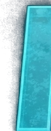
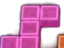
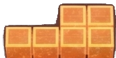
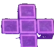
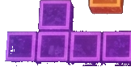

<!doctype html>
<html lang="ko">
  <head>
    <meta charset="UTF-8" />
    <meta name="viewport" content="width=device-width, initial-scale=1.0, maximum-scale=1.0, user-scalable=no" />
    <title>글의 흐름 테트리스 | 독자를 고려해 글 쓰기</title>
    <link rel="stylesheet" as="style" crossorigin href="https://cdn.jsdelivr.net/gh/orioncactus/pretendard@v1.3.9/dist/web/variable/pretendardvariable-dynamic-subset.min.css" />
    <script src="https://cdn.tailwindcss.com"></script>
    <script>
      tailwind.config = {
        theme: {
          extend: {
            fontFamily: {
              sans: ['Pretendard Variable', 'Pretendard', '-apple-system', 'BlinkMacSystemFont', 'system-ui', 'Roboto', 'sans-serif'],
            },
            keyframes: {
              shake: {
                '0%, 100%': { transform: 'translateX(0)' },
                '20%': { transform: 'translateX(-8px) rotate(-1deg)' },
                '40%': { transform: 'translateX(8px) rotate(1deg)' },
                '60%': { transform: 'translateX(-6px) rotate(-0.5deg)' },
                '80%': { transform: 'translateX(6px) rotate(0.5deg)' },
              },
              flipIn: {
                '0%': { transform: 'rotateX(70deg) scale(0.96)', opacity: '0.35' },
                '100%': { transform: 'rotateX(0deg) scale(1)', opacity: '1' },
              },
              popIn: {
                '0%': { transform: 'scale(0.92)', opacity: '0' },
                '70%': { transform: 'scale(1.03)', opacity: '1' },
                '100%': { transform: 'scale(1)', opacity: '1' },
              },
            },
            animation: {
              shake: 'shake 0.45s cubic-bezier(0.36, 0.07, 0.19, 0.97) both',
              flipIn: 'flipIn 0.26s cubic-bezier(0.22, 1, 0.36, 1) forwards',
              popIn: 'popIn 0.3s cubic-bezier(0.22, 1, 0.36, 1) forwards',
            },
          },
        },
      };
    </script>
    <style>
      html, body {
        font-family: 'Pretendard Variable', 'Pretendard', -apple-system, BlinkMacSystemFont, system-ui, Roboto, sans-serif;
        overscroll-behavior: none;
        touch-action: manipulation;
      }
      .manuscript-grid {
        background-image: linear-gradient(to right, rgba(148, 163, 184, 0.14) 1px, transparent 1px), linear-gradient(to bottom, rgba(148, 163, 184, 0.14) 1px, transparent 1px);
        background-size: 28px 28px;
      }
      .glass-panel {
        background: rgba(255, 255, 255, 0.72);
        backdrop-filter: blur(20px);
        -webkit-backdrop-filter: blur(20px);
        border: 1px solid rgba(255, 255, 255, 0.75);
        box-shadow: 0 10px 35px -10px rgba(15, 23, 42, 0.08), inset 0 1px 0 rgba(255, 255, 255, 0.85);
      }
      .glass-subtle {
        background: rgba(255, 255, 255, 0.52);
        backdrop-filter: blur(12px);
        -webkit-backdrop-filter: blur(12px);
        border: 1px solid rgba(255, 255, 255, 0.65);
      }
      @keyframes floatSlow {
        0%, 100% { transform: translateY(0px) rotate(var(--tw-rotate, 0deg)); }
        50% { transform: translateY(-10px) rotate(var(--tw-rotate, 0deg)); }
      }
      .animate-float-slow {
        animation: floatSlow 6s ease-in-out infinite;
      }
    </style>
    <script crossorigin src="https://unpkg.com/react@18/umd/react.production.min.js"></script>
    <script crossorigin src="https://unpkg.com/react-dom@18/umd/react-dom.production.min.js"></script>
    <script src="https://unpkg.com/@babel/standalone/babel.min.js"></script>
  </head>
  <body class="antialiased selection:bg-sky-200 selection:text-slate-900">
    <div id="root"></div>
    <script type="text/babel">
const { useState, useEffect, useRef, useCallback } = React;

// --- sound.js ---
// Web Audio API 기반 사운드 합성 유틸리티 (외부 오디오 파일 없음)

class SoundEngine {
  constructor() {
    this.ctx = null;
    this.muted = false;
  }

  getContext() {
    if (this.muted) return null;
    if (!this.ctx && typeof window !== 'undefined') {
      const AudioCtx = window.AudioContext || window.webkitAudioContext;
      if (AudioCtx) {
        this.ctx = new AudioCtx();
      }
    }
    if (this.ctx && this.ctx.state === 'suspended') {
      this.ctx.resume().catch(() => {});
    }
    return this.ctx;
  }

  setMuted(muted) {
    this.muted = muted;
  }

  playTone(freq, duration, type = 'sine', volume = 0.14, delay = 0) {
    const ctx = this.getContext();
    if (!ctx) return;

    const now = ctx.currentTime + delay;
    const osc = ctx.createOscillator();
    const gain = ctx.createGain();

    osc.type = type;
    osc.frequency.setValueAtTime(freq, now);

    gain.gain.setValueAtTime(0.001, now);
    gain.gain.exponentialRampToValueAtTime(volume, now + 0.015);
    gain.gain.exponentialRampToValueAtTime(0.001, now + duration);

    osc.connect(gain);
    gain.connect(ctx.destination);

    osc.start(now);
    osc.stop(now + duration + 0.02);
  }

  // 말투 변환음: 경쾌한 상승 팝 사운드
  playTransform() {
    const ctx = this.getContext();
    if (!ctx) return;
    const now = ctx.currentTime;
    const osc = ctx.createOscillator();
    const gain = ctx.createGain();

    osc.type = 'triangle';
    osc.frequency.setValueAtTime(440, now);
    osc.frequency.exponentialRampToValueAtTime(660, now + 0.08);

    gain.gain.setValueAtTime(0.001, now);
    gain.gain.exponentialRampToValueAtTime(0.14, now + 0.015);
    gain.gain.exponentialRampToValueAtTime(0.001, now + 0.11);

    osc.connect(gain);
    gain.connect(ctx.destination);

    osc.start(now);
    osc.stop(now + 0.12);
  }

  // 좌우 레인 이동음: 부드러운 틱 사운드
  playMove() {
    this.playTone(340, 0.055, 'sine', 0.08);
  }

  // 원고지 착지 성공음: 맑고 경쾌한 화음 (콤보에 따라 음정 상승)
  playSuccess(combo = 1) {
    const boost = Math.min(combo - 1, 5) * 45;
    this.playTone(523.25 + boost, 0.14, 'sine', 0.14, 0); // C5
    this.playTone(659.25 + boost, 0.16, 'sine', 0.14, 0.07); // E5
    this.playTone(783.99 + boost, 0.24, 'triangle', 0.14, 0.14); // G5
  }

  // 휴지통 함정 제거 성공음
  playTrashSuccess() {
    this.playTone(493.88, 0.1, 'triangle', 0.12, 0); // B4
    this.playTone(739.99, 0.18, 'sine', 0.14, 0.08); // F#5
  }

  // 오답 효과음: 부드러운 하강음
  playError() {
    const ctx = this.getContext();
    if (!ctx) return;
    const now = ctx.currentTime;
    const osc = ctx.createOscillator();
    const gain = ctx.createGain();

    osc.type = 'sawtooth';
    osc.frequency.setValueAtTime(240, now);
    osc.frequency.linearRampToValueAtTime(140, now + 0.25);

    gain.gain.setValueAtTime(0.001, now);
    gain.gain.exponentialRampToValueAtTime(0.09, now + 0.02);
    gain.gain.exponentialRampToValueAtTime(0.001, now + 0.28);

    osc.connect(gain);
    gain.connect(ctx.destination);

    osc.start(now);
    osc.stop(now + 0.3);
  }

  // 스테이지 클리어 팡파레
  playStageClear() {
    const notes = [
      { freq: 523.25, delay: 0, dur: 0.16 }, // C5
      { freq: 659.25, delay: 0.11, dur: 0.16 }, // E5
      { freq: 783.99, delay: 0.22, dur: 0.16 }, // G5
      { freq: 1046.5, delay: 0.34, dur: 0.45 }, // C6
    ];
    notes.forEach((n) => this.playTone(n.freq, n.dur, 'triangle', 0.16, n.delay));
  }
}

const soundEngine = new SoundEngine();

// --- stages.js ---
const STAGES = [
  {
    id: 1,
    title: '1학년 동생에게',
    topic: '미세먼지 심한 날 대처법',
    readerType: 'firstGrader',
    accentColor: 'amber',
    difficulty: '쉬움',
    tags: ['#쉬운낱말선호', '#다정한반말', '#구체적행동'],
    fallDurationMs: 10500,
    initialBubble: '안녕! 미세먼지가 심한 날엔 어떻게 해야 하는지 쉽게 알려 줄래?',
    praiseBubbles: [
      '우와, 말이 쉬워서 귀에 쏙쏙 들어와!',
      '아하! 이렇게 하면 되는구나! 고마워!',
      '정말 다정하고 이해하기 쉽게 설명해 줬네!',
    ],
    finalReview:
      '내가 아는 쉬운 말로 차근차근 알려 줘서 정말 고마워! 이제 미세먼지가 심한 날에도 씩씩하게 잘 지킬 수 있어!',
    steps: [
      {
        part: '처음',
        versions: [
          {
            id: 's1-1-hard',
            text: '금일 대기 중 미세먼지 농도가 나쁨 수준이므로 호흡기 보호를 위해 각별히 유의하기 바랍니다.',
            isCorrect: false,
            feedback: "1학년 동생에게는 '금일', '유의하기 바랍니다' 같은 한자어와 딱딱한 말투가 너무 어려워요!",
          },
          {
            id: 's1-1-correct',
            text: '동생아, 오늘처럼 공기가 뿌옇고 미세먼지가 심한 날에는 우리 몸을 지키는 약속이 필요해!',
            isCorrect: true,
            feedback: '',
          },
          {
            id: 's1-1-rude',
            text: '야, 밖에 먼지 많으니까 그냥 조용히 집에만 있어라.',
            isCorrect: false,
            feedback: '친근한 것도 좋지만, 동생에게 너무 딱딱하고 무뚝뚝한 말투는 어울리지 않아요!',
          },
        ],
      },
      {
        part: '가운데',
        versions: [
          {
            id: 's1-2-hard',
            text: '외출 시에는 반드시 보건용 마스크를 착용하고 귀가 직후에는 개인위생 관리를 철저히 이행해야 합니다.',
            isCorrect: false,
            feedback: "1학년 동생은 '착용', '이행' 같은 어려운 낱말을 이해하기 힘들어해요!",
          },
          {
            id: 's1-2-correct',
            text: '밖에 나갈 땐 코와 입을 가리는 마스크를 꼭 쓰고, 집에 돌아오면 손과 얼굴을 깨끗이 씻어야 해.',
            isCorrect: true,
            feedback: '',
          },
          {
            id: 's1-2-vague',
            text: '어쨌든 알아서 조심하고 마스크 같은 거 대충 쓰고 손도 대강 씻으면 돼.',
            isCorrect: false,
            feedback: '동생이 따라 할 수 있도록 구체적이고 친절하게 행동을 알려 줘야 해요!',
          },
        ],
      },
      {
        part: '끝',
        versions: [
          {
            id: 's1-3-hard',
            text: '이상의 수칙을 성실히 준수하여 건강한 학교생활을 영위할 수 있기를 권장합니다.',
            isCorrect: false,
            feedback: "1학년 동생에게는 '준수', '권장합니다'라는 말이 너무 낯설고 어려워요!",
          },
          {
            id: 's1-3-correct',
            text: '물도 자주 마시고 약속을 잘 지키면 미세먼지도 거뜬히 이겨 낼 수 있을 거야. 우리 꼭 약속하자!',
            isCorrect: true,
            feedback: '',
          },
          {
            id: 's1-3-rude',
            text: '말 안 듣고 아프면 네 손해니까 알아서 해. 그럼 끝!',
            isCorrect: false,
            feedback: '글을 마무리할 때는 동생을 걱정하고 응원하는 다정한 마음이 담겨야 해요!',
          },
        ],
      },
    ],
    traps: [
      {
        id: 's1-trap-1',
        versions: [
          {
            id: 's1-t1-a',
            text: '참고로 어제 축구 경기에서 우리나라 대표팀이 2대 0으로 멋지게 이겼대!',
            isCorrect: false,
            feedback: '이 독자가 궁금해하는 내용이 아니에요! 미세먼지 대처법과 관련이 없어요.',
          },
          {
            id: 's1-t1-b',
            text: '우리나라 축구 대표팀이 어제 경기에서 2골을 넣고 승리했다고 합니다.',
            isCorrect: false,
            feedback: '말투를 바꿔도 미세먼지와 무관한 축구 이야기예요. 휴지통으로 버려야 해요!',
          },
          {
            id: 's1-t1-c',
            text: '어제 축구 진짜 대박이었지! 2대 0으로 완전히 이겼잖아!',
            isCorrect: false,
            feedback: '주제와 상관없는 함정 블록이에요! 휴지통에 버려 주세요.',
          },
        ],
      },
    ],
  },
  {
    id: 2,
    title: '6학년 또래 친구들에게',
    topic: '급식 잔반 줄이기 캠페인',
    readerType: 'peerFriend',
    accentColor: 'sky',
    difficulty: '쉬움',
    tags: ['#공감대형성', '#흥미로운사실', '#부드러운권유'],
    fallDurationMs: 9800,
    initialBubble: '야, 오늘 급식 먹었어? 우리 반 친구들이 귀 기울일 만한 이야기로 써 줘!',
    praiseBubbles: [
      '오, 진짜 내 얘기 같아서 공감이 팍팍 되네!',
      '헉, 음식물 쓰레기가 그렇게나 환경에 영향을 준다고?',
      '강요하지 않고 같이 해 보자고 하니까 마음이 움직인다!',
    ],
    finalReview:
      '친구들 눈높이에 딱 맞게 재미있고 설득력 있게 잘 썼다! 내일부터 나도 먹을 만큼만 받아서 다 먹어야지!',
    steps: [
      {
        part: '처음',
        versions: [
          {
            id: 's2-1-hard',
            text: '본교 학생들의 중식 잔반량 증가 추세에 대하여 심각한 우려를 표명하는 바입니다.',
            isCorrect: false,
            feedback: '또래 친구들에게 연설문처럼 너무 딱딱한 말투를 쓰면 거리감이 느껴져요!',
          },
          {
            id: 's2-1-correct',
            text: '친구들아, 혹시 오늘 급식 시간에 배부르다고 반찬을 그대로 버리진 않았니?',
            isCorrect: true,
            feedback: '',
          },
          {
            id: 's2-1-baby',
            text: '우리 착한 친구들~ 맘마 남기면 배고픈 아기 참새가 엉엉 울어요!',
            isCorrect: false,
            feedback: '6학년 친구들에게는 너무 유치한 말투예요! 또래에 맞는 자연스러운 말투를 골라 보세요.',
          },
        ],
      },
      {
        part: '가운데',
        versions: [
          {
            id: 's2-2-hard',
            text: '폐기되는 음식물은 처리 과정에서 온실가스를 배출하므로 즉각적인 감축이 요구됩니다.',
            isCorrect: false,
            feedback: '딱딱한 보고서 같은 문장보다는 친구들이 흥미를 느낄 수 있는 말투가 좋아요!',
          },
          {
            id: 's2-2-correct',
            text: '우리가 남긴 급식을 치우는 데 엄청난 온실가스가 나온대. 반대로 잔반을 줄이면 지구를 지키는 영웅이 될 수 있어!',
            isCorrect: true,
            feedback: '',
          },
          {
            id: 's2-2-rude',
            text: '급식 남기는 애들은 환경 파괴범이나 다름없으니까 제발 눈치 좀 챙기자.',
            isCorrect: false,
            feedback: '친구를 비난하는 말투는 공감을 얻기 어려워요. 부드럽게 설득해 보세요!',
          },
        ],
      },
      {
        part: '끝',
        versions: [
          {
            id: 's2-3-hard',
            text: '따라서 전교생은 배식량 조절의 의무를 철저히 이행할 것을 촉구합니다.',
            isCorrect: false,
            feedback: "또래 친구들에게 '의무', '촉구'처럼 명령하는 말투는 부담스러워요!",
          },
          {
            id: 's2-3-correct',
            text: '내일부터는 먹을 만큼만 조금씩 받고, 다 못 먹겠으면 처음부터 덜어 달라고 말해 보자. 우리 반부터 시작해 볼래?',
            isCorrect: true,
            feedback: '',
          },
          {
            id: 's2-3-passive',
            text: '뭐, 남기든 말든 각자 자유긴 한데 알아서들 하길 바래.',
            isCorrect: false,
            feedback: '캠페인 글인데 설득력이 부족하고 너무 무책임하게 끝맺었어요!',
          },
        ],
      },
    ],
    traps: [
      {
        id: 's2-trap-1',
        versions: [
          {
            id: 's2-t1-a',
            text: '이번 주말에 새로 개봉하는 SF 영화가 박스오피스 1위라고 하던데 보러 갈래?',
            isCorrect: false,
            feedback: '이 독자가 궁금해하는 내용이 아니에요! 급식 잔반 줄이기와 관련이 없어요.',
          },
          {
            id: 's2-t1-b',
            text: '이번 주 토요일에 개봉하는 인기 영화 예매율이 벌써 1위라고 합니다.',
            isCorrect: false,
            feedback: '주제와 전혀 다른 영화 이야기예요! 휴지통으로 버려 주세요.',
          },
          {
            id: 's2-t1-c',
            text: '아 맞다, 주말에 새로 나온 영화 진짜 재밌대! 꼭 봐!',
            isCorrect: false,
            feedback: '캠페인 글의 흐름을 깨는 함정 블록이에요. 휴지통으로 이동하세요!',
          },
        ],
      },
      {
        id: 's2-trap-2',
        versions: [
          {
            id: 's2-t2-a',
            text: '우리 학교 정문 앞 횡단보도 신호등 색깔이 어제 새로 칠해졌대.',
            isCorrect: false,
            feedback: '급식 잔반 줄이기와 아무 상관이 없는 내용이에요! 휴지통에 버리세요.',
          },
          {
            id: 's2-t2-b',
            text: '학교 앞 횡단보도 도색 작업이 어제 완료되었다고 합니다.',
            isCorrect: false,
            feedback: '글의 주제에서 벗어난 불필요한 문장이에요. 휴지통으로 보내 주세요!',
          },
          {
            id: 's2-t2-c',
            text: '등굣길 횡단보도가 하얗고 깔끔해져서 기분 좋더라.',
            isCorrect: false,
            feedback: '이 글의 목적과 무관한 함정 블록이에요! 휴지통으로 옮겨 착지시키세요.',
          },
        ],
      },
    ],
  },
  {
    id: 3,
    title: '교장 선생님께',
    topic: '학교 도서관 희망 도서 늘리기 건의',
    readerType: 'principal',
    accentColor: 'indigo',
    difficulty: '보통',
    tags: ['#알맞은높임표현', '#정중한어조', '#타당한근거'],
    fallDurationMs: 9200,
    initialBubble: '허허, 우리 학교 도서관에 대해 건의할 이야기가 있구나. 차분하게 읽어 보마.',
    praiseBubbles: [
      '예의 바르고 정중하게 인사를 건네니 기분이 좋구나.',
      '학생들의 설문 결과까지 근거로 들다니 아주 설득력이 있구나!',
      '구체적인 해결 방안까지 제안해 주니 꼭 검토해 보아야겠어.',
    ],
    finalReview:
      '글의 목적에 맞게 높임 표현을 바르게 사용하고, 타당한 근거까지 잘 갖추어 주었구나. 멋진 건의문 고맙다!',
    steps: [
      {
        part: '처음',
        versions: [
          {
            id: 's3-1-casual',
            text: '교장 선생님! 저 6학년 누구인데요, 도서관에 책 좀 더 사 주세요.',
            isCorrect: false,
            feedback: '교장 선생님께 드리는 건의문에는 너무 가볍고 두서없는 표현이에요!',
          },
          {
            id: 's3-1-correct',
            text: '존경하는 교장 선생님께. 안녕하십니까? 저는 학교 도서관을 자주 이용하는 6학년 학생입니다.',
            isCorrect: true,
            feedback: '',
          },
          {
            id: 's3-1-wrongHonorific',
            text: '교장 선생님, 안녕하세요. 선생님이 도서관 책을 늘려 주셨으면 해서 글 씁니다.',
            isCorrect: false,
            feedback: '어른께 공식적으로 건의할 때는 인사말과 어조를 조금 더 격식 있고 정중하게 갖추는 것이 좋아요!',
          },
        ],
      },
      {
        part: '가운데',
        versions: [
          {
            id: 's3-2-emotional',
            text: '도서관에 재미있는 새 책이 너무 없어서 친구들이 다 심심해하고 불만이 많아요.',
            isCorrect: false,
            feedback: '단순한 불만보다는 설문 조사나 구체적인 사례 같은 타당한 근거를 들어야 설득력이 높아져요!',
          },
          {
            id: 's3-2-correct',
            text: '최근 우리 반 학생 25명을 조사한 결과, 20명이 읽고 싶은 신간 도서가 부족하다고 응답했습니다. 희망 도서 예산을 조금 더 늘려 주시기를 건의드립니다.',
            isCorrect: true,
            feedback: '',
          },
          {
            id: 's3-2-rude',
            text: '요즘 애들이 원하는 책이 하나도 없으니까 이번 달 안에 무조건 새로 사 오셔야 합니다.',
            isCorrect: false,
            feedback: '건의하는 글에서는 강요하거나 명령하는 말투가 아니라 정중히 부탁하는 어조를 써야 해요!',
          },
        ],
      },
      {
        part: '끝',
        versions: [
          {
            id: 's3-3-casual',
            text: '아무튼 꼭 해 주실 거라 믿고 이만 줄일게요. 안녕히 계세요!',
            isCorrect: false,
            feedback: '교장 선생님께 드리는 공식 건의문의 마무리로는 너무 가벼운 말투예요!',
          },
          {
            id: 's3-3-correct',
            text: '학생들의 독서 습관을 기르는 데 큰 도움이 될 것입니다. 바쁘신 가운데 끝까지 읽어 주셔서 감사드립니다.',
            isCorrect: true,
            feedback: '',
          },
          {
            id: 's3-3-wrongHonorific',
            text: '선생님께서 빨리 수고하시고 좋은 답변 기다리고 있겠습니다.',
            isCorrect: false,
            feedback: "윗사람에게 '수고하세요'라는 표현은 예의에 어긋날 수 있어 피하는 것이 좋아요!",
          },
        ],
      },
    ],
    traps: [
      {
        id: 's3-trap-1',
        versions: [
          {
            id: 's3-t1-a',
            text: '교장 선생님, 오늘 점심 메뉴에 나온 돈까스가 정말 바삭하고 맛있었습니다.',
            isCorrect: false,
            feedback: '도서관 희망 도서 건의와 관련이 없는 내용이에요! 휴지통에 버려 주세요.',
          },
          {
            id: 's3-t1-b',
            text: '오늘 급식 돈까스가 역대급으로 맛있었던 것 같아요.',
            isCorrect: false,
            feedback: '말투와 상관없이 건의문의 주제에서 벗어난 함정 블록이에요!',
          },
          {
            id: 's3-t1-c',
            text: '금일 중식으로 제공된 돈가스 요리의 품질이 매우 우수하였습니다.',
            isCorrect: false,
            feedback: '격식을 차려도 도서관 책 건의와는 무관한 내용이에요. 휴지통으로 보내세요!',
          },
        ],
      },
      {
        id: 's3-trap-2',
        versions: [
          {
            id: 's3-t2-a',
            text: '저희 집 강아지가 어제 새 장난감을 물어뜯어서 정말 속상했습니다.',
            isCorrect: false,
            feedback: '교장 선생님께 드리는 공적인 건의문에 개인적인 일기 내용은 어울리지 않아요!',
          },
          {
            id: 's3-t2-b',
            text: '어제 우리 강아지가 장난감을 망가뜨려서 너무 속상했어.',
            isCorrect: false,
            feedback: '주제와 전혀 관련 없는 불필요한 내용이에요! 휴지통으로 버리세요.',
          },
          {
            id: 's3-t2-c',
            text: '반려견이 장난감을 파손하여 개인적으로 매우 안타까웠습니다.',
            isCorrect: false,
            feedback: '독자와 글의 목적에 맞지 않는 함정 블록이에요. 휴지통에 버려야 해요!',
          },
        ],
      },
    ],
  },
  {
    id: 4,
    title: '전학 온 새 친구에게',
    topic: '우리 반과 학교생활 안내하기',
    readerType: 'transferStudent',
    accentColor: 'emerald',
    difficulty: '보통',
    tags: ['#따뜻한환영', '#유용한정보', '#배려하는말투'],
    fallDurationMs: 8600,
    initialBubble: '안녕... 오늘 처음 전학 와서 아직 교실이랑 학교가 너무 낯설고 떨려.',
    praiseBubbles: [
      '반갑게 맞아 주니까 긴장이 조금 풀리는 것 같아!',
      '도움이 꼭 필요한 정보를 친절하게 알려 줘서 고마워!',
      '든든한 친구가 생긴 것 같아서 마음이 놓여!',
    ],
    finalReview:
      '낯선 학교에 와서 긴장했는데, 네가 따뜻하게 안내해 준 덕분에 금방 적응할 수 있을 것 같아! 정말 고마워!',
    steps: [
      {
        part: '처음',
        versions: [
          {
            id: 's4-1-cold',
            text: '오늘 전학 왔지? 우리 반 규칙 많으니까 눈치껏 빨리 외워 두는 게 좋을 거야.',
            isCorrect: false,
            feedback: '전학 와서 긴장한 친구에게 규칙부터 강조하면 더 주눅 들고 부담스러울 수 있어요!',
          },
          {
            id: 's4-1-correct',
            text: '우리 반에 온 걸 진심으로 환영해! 처음이라 낯설겠지만 우리가 금방 적응할 수 있게 도와줄게.',
            isCorrect: true,
            feedback: '',
          },
          {
            id: 's4-1-formal',
            text: '본 학급에 전입하신 것을 축하드리며 학교생활 수칙을 안내해 드리고자 합니다.',
            isCorrect: false,
            feedback: '같은 반 또래 친구에게 너무 딱딱한 안내문 말투예요. 다정하게 말을 건네 보세요!',
          },
        ],
      },
      {
        part: '가운데',
        versions: [
          {
            id: 's4-2-vague',
            text: '화장실이랑 급식실은 그냥 애들 우르르 가는 곳 따라가다 보면 나올 거야.',
            isCorrect: false,
            feedback: '새 친구가 헤매지 않도록 구체적인 위치나 이용 방법을 친절히 알려 줘야 해요!',
          },
          {
            id: 's4-2-correct',
            text: '우리 교실 바로 옆에 도서관이 있고, 점심시간엔 2층 급식실로 가면 돼. 모르는 게 있으면 언제든 내게 물어봐!',
            isCorrect: true,
            feedback: '',
          },
          {
            id: 's4-2-brag',
            text: '참고로 우리 학교는 축구부가 엄청 유명한데 난 거기서 주전 공격수로 뛰고 있어.',
            isCorrect: false,
            feedback: '새 친구가 지금 당장 필요로 하는 학교생활 안내보다는 자기 자랑에 가까워요!',
          },
        ],
      },
      {
        part: '끝',
        versions: [
          {
            id: 's4-3-correct',
            text: '오늘 쉬는 시간에 같이 학교 구경도 하고 매점 앞 게시판도 보러 가자. 앞으로 잘 지내 보자!',
            isCorrect: true,
            feedback: '',
          },
          {
            id: 's4-3-cold',
            text: '그럼 일주일 안에 우리 반 분위기 파악해서 알아서 잘 적응하길 바라.',
            isCorrect: false,
            feedback: '혼자 알아서 하라는 느낌보다는 함께 어울리자는 따뜻한 마무리가 좋아요!',
          },
          {
            id: 's4-3-formal',
            text: '이상으로 학급 안내를 마치겠습니다. 원만한 교우 관계 형성하시기를 기원합니다.',
            isCorrect: false,
            feedback: '또래 친구에게 쓰는 글인데 너무 거리감이 느껴지는 격식체예요!',
          },
        ],
      },
    ],
    traps: [
      {
        id: 's4-trap-1',
        versions: [
          {
            id: 's4-t1-a',
            text: '지난달에 우리 가족이 제주도로 여행 가서 먹은 흑돼지가 진짜 맛있었어.',
            isCorrect: false,
            feedback: '새 친구에게 학교를 안내하는 내용과 전혀 관련 없는 이야기예요!',
          },
          {
            id: 's4-t1-b',
            text: '지난달 제주도 여행에서 맛본 음식이 매우 인상 깊었습니다.',
            isCorrect: false,
            feedback: '말투를 바꿔도 학교생활 안내와 무관한 여행 이야기예요. 휴지통으로 보내세요!',
          },
          {
            id: 's4-t1-c',
            text: '야, 너 제주도 가 봤냐? 거기 맛집 진짜 많던데.',
            isCorrect: false,
            feedback: '주제에서 벗어난 함정 블록이에요! 휴지통에 버려야 해요.',
          },
        ],
      },
      {
        id: 's4-trap-2',
        versions: [
          {
            id: 's4-t2-a',
            text: '어제 스마트폰 게임 업데이트가 되면서 새로운 캐릭터가 출시되었대.',
            isCorrect: false,
            feedback: '전학 온 친구에게 학교를 소개하는 글의 흐름에 맞지 않는 내용이에요!',
          },
          {
            id: 's4-t2-b',
            text: '인기 모바일 게임의 신규 업데이트가 어제 진행되었다고 합니다.',
            isCorrect: false,
            feedback: '게임 소식은 학교생활 안내와 관련이 없어요. 휴지통으로 이동하세요!',
          },
          {
            id: 's4-t2-c',
            text: '새로 나온 게임 캐릭터 진짜 세 보이던데 같이 할래?',
            isCorrect: false,
            feedback: '글의 목적과 무관한 함정 블록이에요! 휴지통으로 착지시키세요.',
          },
        ],
      },
    ],
  },
  {
    id: 5,
    title: '부모님께',
    topic: '주말 가족 나들이 계획 제안하기',
    readerType: 'parents',
    accentColor: 'amber',
    difficulty: '보통',
    tags: ['#공손한부탁', '#구체적계획', '#감사의마음'],
    fallDurationMs: 8000,
    initialBubble: '우리 딸(아들), 이번 주말에 하고 싶은 게 있다고? 어떤 계획인지 들어 볼까?',
    praiseBubbles: [
      '우리를 먼저 생각해 주는 마음이 참 예쁘구나!',
      '시간과 장소까지 꼼꼼하게 알아본 걸 보니 기특하네!',
      '부모님 마음을 헤아려 주니 꼭 함께 가고 싶어지는구나!',
    ],
    finalReview:
      '무작정 가자고 조르지 않고 부모님 상황까지 배려해서 계획을 세워 주다니 정말 대견하구나! 이번 주말에 꼭 다녀오자!',
    steps: [
      {
        part: '처음',
        versions: [
          {
            id: 's5-1-whine',
            text: '엄마 아빠! 나 이번 주말에 집에만 있기 싫으니까 무조건 놀러 가야 돼요!',
            isCorrect: false,
            feedback: '부모님께 제안을 드릴 때는 떼를 쓰기보다 공손하고 다정하게 말씀을 여쭈어야 해요!',
          },
          {
            id: 's5-1-correct',
            text: '사랑하는 엄마, 아빠! 요즘 일하시느라 많이 피곤하시죠? 이번 주말에 가족과 좋은 추억을 만들고 싶어서 제안을 드려요.',
            isCorrect: true,
            feedback: '',
          },
          {
            id: 's5-1-tooFormal',
            text: '존경하는 부모님 귀하. 금주 토요일 야외 활동 추진 건에 대하여 보고드립니다.',
            isCorrect: false,
            feedback: '부모님께는 공손하되, 회사 보고서처럼 너무 딱딱한 말투보다는 정감 있는 높임말이 좋아요!',
          },
        ],
      },
      {
        part: '가운데',
        versions: [
          {
            id: 's5-2-vague',
            text: '아무 공원이나 가서 맛있는 거 먹고 재미있게 놀다 오면 좋겠어요.',
            isCorrect: false,
            feedback: '부모님이 결정하시기 쉽도록 구체적인 장소나 활동 내용을 제안해 드리면 더 좋아요!',
          },
          {
            id: 's5-2-correct',
            text: '집에서 차로 30분 거리에 있는 수목원에서 산책을 하고, 근처에서 함께 점심을 먹으면 부담도 적고 기분 전환이 될 것 같아요.',
            isCorrect: true,
            feedback: '',
          },
          {
            id: 's5-2-selfish',
            text: '제가 제일 가고 싶은 놀이공원에 가서 입장권이랑 기념품도 다 사 주셨으면 해요.',
            isCorrect: false,
            feedback: '자기 욕심만 내세우기보다 부모님의 피로와 비용도 함께 배려하는 제안이 설득력이 높아요!',
          },
        ],
      },
      {
        part: '끝',
        versions: [
          {
            id: 's5-3-correct',
            text: '만약 이번 주에 쉬고 싶으시다면 다음 주로 미뤄도 괜찮아요. 두 분의 생각은 어떠신지 궁금해요!',
            isCorrect: true,
            feedback: '',
          },
          {
            id: 's5-3-pushy',
            text: '제가 이렇게 열심히 짰으니까 토요일 아침 8시에 무조건 출발하는 걸로 알게요!',
            isCorrect: false,
            feedback: '부모님의 일정과 의견을 여쭙지 않고 일방적으로 정해 버리면 예의에 어긋나요!',
          },
          {
            id: 's5-3-cold',
            text: '이상입니다. 검토 후 승인해 주시기 바랍니다.',
            isCorrect: false,
            feedback: '가족에게 쓰는 따뜻한 제안 글에 너무 사무적인 마무리예요!',
          },
        ],
      },
    ],
    traps: [
      {
        id: 's5-trap-1',
        versions: [
          {
            id: 's5-t1-a',
            text: '오늘 과학 시간에 배운 광합성 원리가 시험에 꼭 나온다고 선생님이 강조하셨어요.',
            isCorrect: false,
            feedback: '주말 가족 나들이 계획과 관련 없는 수업 이야기예요! 휴지통에 버려 주세요.',
          },
          {
            id: 's5-t1-b',
            text: '선생님께서 과학 시험에 광합성이 출제될 예정이라고 하셨습니다.',
            isCorrect: false,
            feedback: '가족 나들이 제안과 무관한 내용이에요. 휴지통으로 이동하세요!',
          },
          {
            id: 's5-t1-c',
            text: '과학 시험 범위가 광합성이라서 공부해야 해.',
            isCorrect: false,
            feedback: '글의 흐름에서 벗어난 함정 블록이에요! 휴지통에 버려야 해요.',
          },
        ],
      },
      {
        id: 's5-trap-2',
        versions: [
          {
            id: 's5-t2-a',
            text: '옆 반 철수가 어제 실내화를 잃어버려서 하루 종일 슬리퍼를 신고 다녔대요.',
            isCorrect: false,
            feedback: '부모님께 드리는 나들이 제안 글과 전혀 상관없는 내용이에요!',
          },
          {
            id: 's5-t2-b',
            text: '타 학급 학생이 실내화를 분실하는 일이 발생하였습니다.',
            isCorrect: false,
            feedback: '글의 주제와 무관한 불필요한 정보예요. 휴지통으로 보내세요!',
          },
          {
            id: 's5-t2-c',
            text: '철수가 실내화를 못 찾아서 진짜 당황했대.',
            isCorrect: false,
            feedback: '나들이 계획과 관련 없는 함정 블록이에요! 휴지통으로 옮기세요.',
          },
        ],
      },
    ],
  },
  {
    id: 6,
    title: '아파트 이웃 주민들께',
    topic: '층간 소음 예방과 서로 배려하기',
    readerType: 'neighbors',
    accentColor: 'sky',
    difficulty: '보통',
    tags: ['#예의바른표현', '#공동체배려', '#실천방안'],
    fallDurationMs: 7600,
    initialBubble: '요즘 아파트 엘리베이터 게시판에 붙은 안내문인가요? 서로 기분 상하지 않게 잘 써 줬으면 좋겠네요.',
    praiseBubbles: [
      '이웃을 존중하는 따뜻한 인사말 덕분에 마음이 편안해지네요.',
      '탓하기보다 함께 지킬 수 있는 방법을 제안해 주니 참 좋아요!',
      '서로 배려하는 멋진 아파트 문화가 만들어질 것 같아요.',
    ],
    finalReview:
      '이웃 간의 민감한 문제인데도 누구를 탓하지 않고 정중하고 따뜻하게 배려를 부탁해 주어서 참 고맙습니다!',
    steps: [
      {
        part: '처음',
        versions: [
          {
            id: 's6-1-angry',
            text: '위층 사람들 제발 쿵쾅거리며 걷지 좀 마세요. 시끄러워서 살 수가 없습니다!',
            isCorrect: false,
            feedback: '이웃에게 화를 내거나 따지는 말투는 오히려 갈등을 키울 수 있어요!',
          },
          {
            id: 's6-1-correct',
            text: '안녕하세요, 같은 동에 사는 이웃 주민 여러분! 날씨가 쌀쌀해지면서 집에서 보내는 시간이 많아졌네요.',
            isCorrect: true,
            feedback: '',
          },
          {
            id: 's6-1-casual',
            text: '이웃님들 안녕~ 우리 아파트 좀 조용히 좀 합시다!',
            isCorrect: false,
            feedback: '불특정 다수의 어른과 이웃이 읽는 안내문에는 정중한 높임말이 알맞아요!',
          },
        ],
      },
      {
        part: '가운데',
        versions: [
          {
            id: 's6-2-blame',
            text: '밤늦게까지 뛰어다니고 문 쾅쾅 닫는 집들은 양심이 없는 거 아닌가요?',
            isCorrect: false,
            feedback: '비난하는 표현보다는 모두가 실천할 수 있는 구체적인 배려 방법을 안내하는 것이 좋아요!',
          },
          {
            id: 's6-2-correct',
            text: '저녁 9시 이후에는 실내화를 착용하고, 의자를 끌 때는 소리가 나지 않게 살짝 들어서 옮기면 층간 소음을 크게 줄일 수 있습니다.',
            isCorrect: true,
            feedback: '',
          },
          {
            id: 's6-2-extreme',
            text: '앞으로 아파트 안에서는 발소리가 나지 않게 무조건 까치발로만 걸어 다녀야 합니다.',
            isCorrect: false,
            feedback: '현실적으로 지키기 어려운 무리한 요구는 공감을 얻기 힘들어요!',
          },
        ],
      },
      {
        part: '끝',
        versions: [
          {
            id: 's6-3-correct',
            text: '조금씩만 서로의 입장을 헤아린다면 모두가 편안하고 웃음 가득한 아파트가 될 것입니다. 감사합니다.',
            isCorrect: true,
            feedback: '',
          },
          {
            id: 's6-3-threat',
            text: '또 시끄러우면 바로 관리사무소에 신고할 테니 알아서 조심하세요.',
            isCorrect: false,
            feedback: '협박이나 경고로 끝맺기보다는 함께 배려하자는 따뜻한 마무리가 좋아요!',
          },
          {
            id: 's6-3-casual',
            text: '아무튼 다들 조용히 좀 지내길 바래요. 그럼 이만!',
            isCorrect: false,
            feedback: '이웃에게 붙이는 공적인 안내문으로는 마무리가 너무 가볍고 성의가 부족해요!',
          },
        ],
      },
    ],
    traps: [
      {
        id: 's6-trap-1',
        versions: [
          {
            id: 's6-t1-a',
            text: '오늘 저녁 반찬으로 나온 김치찌개가 정말 얼큰하고 맛있었습니다.',
            isCorrect: false,
            feedback: '층간 소음 예방 안내문과 전혀 관련이 없는 개인적인 식사 이야기예요!',
          },
          {
            id: 's6-t1-b',
            text: '오늘 저녁 식사 메뉴는 김치찌개와 계란말이였습니다.',
            isCorrect: false,
            feedback: '주제와 무관한 내용이에요. 휴지통으로 옮겨서 버려 주세요!',
          },
          {
            id: 's6-t1-c',
            text: '역시 추운 날엔 김치찌개가 최고인 것 같아.',
            isCorrect: false,
            feedback: '안내문의 흐름과 맞지 않는 함정 블록이에요! 휴지통에 버리세요.',
          },
        ],
      },
      {
        id: 's6-trap-2',
        versions: [
          {
            id: 's6-t2-a',
            text: '내일 오후에는 전국적으로 구름이 많고 비가 조금 내릴 예정이라고 합니다.',
            isCorrect: false,
            feedback: '이웃 배려 안내문과 관련 없는 일기예보예요! 휴지통으로 보내세요.',
          },
          {
            id: 's6-t2-b',
            text: '내일 비 온다니까 우산 챙겨 나가는 거 잊지 마.',
            isCorrect: false,
            feedback: '층간 소음 예방과는 상관없는 내용이에요. 휴지통에 버려야 해요!',
          },
          {
            id: 's6-t2-c',
            text: '기상청 발표에 따르면 내일 강수 확률이 60%입니다.',
            isCorrect: false,
            feedback: '글의 목적에서 벗어난 함정 블록이에요! 휴지통으로 이동하세요.',
          },
        ],
      },
    ],
  },
  {
    id: 7,
    title: '학교 보건 선생님께',
    topic: '응급 처치 안전 교육 요청하기',
    readerType: 'nurseTeacher',
    accentColor: 'rose',
    difficulty: '어려움',
    tags: ['#정중한높임', '#분명한목적', '#현실적근거'],
    fallDurationMs: 7200,
    initialBubble: '어머, 6학년 학생이구나! 보건실에 무슨 일로 글을 보냈는지 읽어 볼게요.',
    praiseBubbles: [
      '예의를 갖추어 용건을 분명히 밝히니 이해하기가 참 쉽네요.',
      '실제 학교에서 겪은 사례를 근거로 드니 교육의 필요성이 확 와닿아요!',
      '학생들을 생각하는 마음이 느껴져서 꼭 수업을 준비해야겠어요.',
    ],
    finalReview:
      '왜 안전 교육이 필요한지 타당한 근거를 들어 정중하게 요청해 주어서 고마워요. 6학년을 위한 실습 시간을 꼭 마련해 볼게요!',
    steps: [
      {
        part: '처음',
        versions: [
          {
            id: 's7-1-casual',
            text: '보건 선생님! 우리 반 애들이 자꾸 다치니까 응급 처치 수업 좀 해 주세요.',
            isCorrect: false,
            feedback: '선생님께 공식적으로 교육을 요청하는 글에는 조금 더 정중하고 차분한 인사가 어울려요!',
          },
          {
            id: 's7-1-correct',
            text: '보건 선생님, 안녕하세요. 늘 학생들의 건강을 돌봐 주셔서 감사합니다. 다름이 아니라 6학년 안전 교육에 대해 건의드리고자 글을 썼습니다.',
            isCorrect: true,
            feedback: '',
          },
          {
            id: 's7-1-wrongHonorific',
            text: '보건 선생님, 수고 많으십니다. 제가 선생님한테 부탁할 게 있어서 글 올립니다.',
            isCorrect: false,
            feedback: "윗사람에게 '수고 많으십니다'나 '선생님한테' 같은 표현은 격식 있는 요청 글에 어색해요!",
          },
        ],
      },
      {
        part: '가운데',
        versions: [
          {
            id: 's7-2-vague',
            text: '요즘 친구들이 운동장에서 자주 넘어지는데 어떻게 해야 할지 몰라서 그냥 당황하기만 해요.',
            isCorrect: false,
            feedback: '조금 더 구체적인 상황과, 어떤 교육이 필요한지 명확히 제시해야 설득력이 높아져요!',
          },
          {
            id: 's7-2-correct',
            text: '최근 체육 시간이나 쉬는 시간에 찰과상과 발목 접질림이 자주 발생하지만, 초기 대처법을 몰라 우왕좌왕하는 경우가 많습니다. 간단한 소독과 냉찜질 실습 교육을 부탁드립니다.',
            isCorrect: true,
            feedback: '',
          },
          {
            id: 's7-2-command',
            text: '선생님께서 바쁘시더라도 다음 주 월요일 3교시에는 무조건 우리 반에 오셔서 수업을 진행해 주세요.',
            isCorrect: false,
            feedback: '상대방의 일정을 고려하지 않고 시간까지 일방적으로 못 박는 말투는 정중하지 못해요!',
          },
        ],
      },
      {
        part: '끝',
        versions: [
          {
            id: 's7-3-correct',
            text: '선생님과 함께 배우면 위급한 상황에서도 침착하게 친구를 도울 수 있을 것입니다. 긍정적으로 검토해 주시면 감사하겠습니다.',
            isCorrect: true,
            feedback: '',
          },
          {
            id: 's7-3-tooLight',
            text: '꼭 해 주실 거라 믿고 기다릴게요! 안녕히 계세요~',
            isCorrect: false,
            feedback: '물결표(~)나 가벼운 말투는 선생님께 드리는 공식적인 건의 글의 마무리에 어울리지 않아요!',
          },
          {
            id: 's7-3-rude',
            text: '교육을 안 해 주시면 다치는 친구들이 계속 늘어날 수 있으니 빨리 결정해 주세요.',
            isCorrect: false,
            feedback: '부담을 주거나 재촉하는 어조보다는 감사를 담은 정중한 마무리가 알맞아요!',
          },
        ],
      },
    ],
    traps: [
      {
        id: 's7-trap-1',
        versions: [
          {
            id: 's7-t1-a',
            text: '선생님, 지난주 미술 시간에 만든 찰흙 작품이 전시회에서 칭찬을 받았습니다.',
            isCorrect: false,
            feedback: '응급 처치 교육 요청과 관련 없는 미술 수업 이야기예요! 휴지통으로 보내세요.',
          },
          {
            id: 's7-t1-b',
            text: '미술 시간에 만든 작품이 아주 잘 완성되어서 기분이 좋았어.',
            isCorrect: false,
            feedback: '글의 목적과 전혀 상관없는 내용이에요. 휴지통에 버려 주세요!',
          },
          {
            id: 's7-t1-c',
            text: '교내 미술 작품 전시회가 성황리에 개최되고 있습니다.',
            isCorrect: false,
            feedback: '보건 안전 교육과 무관한 함정 블록이에요! 휴지통으로 이동하세요.',
          },
        ],
      },
      {
        id: 's7-trap-2',
        versions: [
          {
            id: 's7-t2-a',
            text: '요즘 인기 있는 아이돌 그룹의 새 앨범 노래가 정말 신나고 좋습니다.',
            isCorrect: false,
            feedback: '보건 선생님께 드리는 건의문과 무관한 가요 이야기예요! 휴지통에 버리세요.',
          },
          {
            id: 's7-t2-b',
            text: '신곡 음원 차트 1위를 기록한 가수의 무대가 화제입니다.',
            isCorrect: false,
            feedback: '글의 흐름을 방해하는 함정 블록이에요. 휴지통으로 착지시키세요!',
          },
          {
            id: 's7-t2-c',
            text: '그 아이돌 노래 춤이 진짜 멋있어서 따라 추고 싶어.',
            isCorrect: false,
            feedback: '주제와 상관없는 불필요한 내용이에요! 휴지통으로 보내세요.',
          },
        ],
      },
    ],
  },
  {
    id: 8,
    title: '유치원 동생들에게',
    topic: '올바른 손 씻기 방법 알려 주기',
    readerType: 'kindergartener',
    accentColor: 'amber',
    difficulty: '어려움',
    tags: ['#아주쉬운낱말', '#의성어의태어', '#친절한설명'],
    fallDurationMs: 6800,
    initialBubble: '언니, 오빠! 손은 왜 씻어야 하고, 어떻게 씻는 거예요? 재미있게 알려 주세요!',
    praiseBubbles: [
      '우와! 세균 괴물 이야기가 나와서 귀가 쫑긋 서요!',
      '보글보글 뽀득뽀득! 나도 노래 부르면서 따라 할 수 있어요!',
      '반짝반짝 깨끗해진 손으로 하이파이브 하고 싶어요!',
    ],
    finalReview:
      '이야기처럼 재미있고 따라 하기 쉽게 알려 줘서 정말 고마워요! 이제 밥 먹기 전에 꼭 뽀득뽀득 씻을게요!',
    steps: [
      {
        part: '처음',
        versions: [
          {
            id: 's8-1-hard',
            text: '동생들아, 손 표면에 서식하는 각종 병원균과 바이러스를 제거하기 위해 세정이 필요해.',
            isCorrect: false,
            feedback: "유치원 동생들에게 '서식', '병원균', '세정' 같은 단어는 너무 어렵고 무섭게 느껴져요!",
          },
          {
            id: 's8-1-correct',
            text: '안녕, 귀여운 동생들! 우리 손에는 눈에 보이지 않는 나쁜 세균 괴물들이 몰래 숨어 있대. 같이 물리쳐 볼까?',
            isCorrect: true,
            feedback: '',
          },
          {
            id: 's8-1-scary',
            text: '손 안 씻고 밥 먹으면 배가 엄청나게 아파서 병원에 주사 맞으러 가야 해!',
            isCorrect: false,
            feedback: '겁을 주는 말투보다는 동생들이 즐겁게 실천하고 싶어지는 다정한 말투가 좋아요!',
          },
        ],
      },
      {
        part: '가운데',
        versions: [
          {
            id: 's8-2-hard',
            text: '비누 거품을 충분히 발생시킨 후 손바닥과 손등, 손가락 사이사이를 30초 이상 마찰해야 해.',
            isCorrect: false,
            feedback: "유치원 동생은 '발생', '마찰' 같은 어려운 말보다 쉽고 생생한 표현을 잘 이해해요!",
          },
          {
            id: 's8-2-correct',
            text: '비누로 보글보글 거품을 내서 손바닥을 쓱쓱, 손등도 싹싹, 손가락 사이사이까지 뽀득뽀득 문질러 주는 거야!',
            isCorrect: true,
            feedback: '',
          },
          {
            id: 's8-2-vague',
            text: '물에 손 한번 쓱 적시고 비누 조금 묻혀서 대충 헹구면 금방 끝나.',
            isCorrect: false,
            feedback: '올바른 손 씻기 방법을 알려 주는 글이므로 구체적인 순서를 정확히 설명해야 해요!',
          },
        ],
      },
      {
        part: '끝',
        versions: [
          {
            id: 's8-3-correct',
            text: '생일 축하 노래를 두 번 부르는 동안 깨끗이 씻으면 세균 괴물들이 도망갈 거야. 우리 반짝반짝 건강해지자!',
            isCorrect: true,
            feedback: '',
          },
          {
            id: 's8-3-hard',
            text: '이상과 같은 올바른 손 씻기 습관을 생활화하여 질병을 예방하도록 하자.',
            isCorrect: false,
            feedback: "유치원 동생에게 '생활화', '질병 예방'이라는 표현은 너무 딱딱하고 어려워요!",
          },
          {
            id: 's8-3-rude',
            text: '이제 다 알려 줬으니까 안 씻으면 지저분한 아기 돼지 되는 거다?',
            isCorrect: false,
            feedback: '동생을 놀리는 말투보다는 칭찬하고 응원해 주는 따뜻한 마무리가 좋아요!',
          },
        ],
      },
    ],
    traps: [
      {
        id: 's8-trap-1',
        versions: [
          {
            id: 's8-t1-a',
            text: '우리나라의 수도는 서울이고, 인구는 약 900만 명이 넘습니다.',
            isCorrect: false,
            feedback: '손 씻기와도, 유치원 동생의 관심사와도 전혀 맞지 않는 내용이에요!',
          },
          {
            id: 's8-t1-b',
            text: '서울특별시에는 아주 많은 사람들이 살고 있대.',
            isCorrect: false,
            feedback: '올바른 손 씻기 방법과 무관한 함정 블록이에요. 휴지통으로 보내세요!',
          },
          {
            id: 's8-t1-c',
            text: '수도권 인구 밀집 현상에 대해 알아보자.',
            isCorrect: false,
            feedback: '주제에서 완전히 벗어난 내용이에요! 휴지통에 버려 주세요.',
          },
        ],
      },
      {
        id: 's8-trap-2',
        versions: [
          {
            id: 's8-t2-a',
            text: '지난달에 산 새 필통에 연필 다섯 자루가 쏙 들어가서 편해.',
            isCorrect: false,
            feedback: '손 씻기 안내와 전혀 상관없는 학용품 이야기예요!',
          },
          {
            id: 's8-t2-b',
            text: '새로 구입한 필통의 수납공간이 매우 넉넉합니다.',
            isCorrect: false,
            feedback: '글의 흐름과 관련 없는 함정 블록이에요. 휴지통으로 이동하세요!',
          },
          {
            id: 's8-t2-c',
            text: '예쁜 필통 자랑하고 싶어서 가져왔어!',
            isCorrect: false,
            feedback: '불필요한 내용이에요! 휴지통에 착지시켜 걸러내세요.',
          },
        ],
      },
      {
        id: 's8-trap-3',
        versions: [
          {
            id: 's8-t3-a',
            text: '오늘 아침에 버스를 놓칠 뻔해서 정류장까지 전력 질주했어.',
            isCorrect: false,
            feedback: '유치원 동생에게 손 씻기를 알려 주는 글과 무관한 내용이에요!',
          },
          {
            id: 's8-t3-b',
            text: '등교 시간 버스를 타기 위해 빠르게 뛰어야 했습니다.',
            isCorrect: false,
            feedback: '글의 주제에서 벗어난 함정 블록이에요. 휴지통으로 보내세요!',
          },
          {
            id: 's8-t3-c',
            text: '아침에 지각할 뻔해서 진짜 식은땀 났지 뭐야.',
            isCorrect: false,
            feedback: '손 씻기와 관련 없는 내용이에요! 휴지통에 버려야 해요.',
          },
        ],
      },
    ],
  },
  {
    id: 9,
    title: '구청장님께',
    topic: '학교 앞 횡단보도 안전 시설 설치 건의',
    readerType: 'mayor',
    accentColor: 'indigo',
    difficulty: '어려움',
    tags: ['#공식적격식체', '#객관적근거', '#명확한해결책'],
    fallDurationMs: 6400,
    initialBubble: '어린이 여러분의 목소리는 언제나 소중합니다. 어떤 지역 안전 문제를 건의하려는지 읽어 보겠습니다.',
    praiseBubbles: [
      '지역의 어른께 드리는 공적인 글답게 예의와 품격이 잘 갖추어졌군요.',
      '실제 관찰한 문제점과 구체적인 대안을 함께 제시하니 매우 설득력이 높습니다!',
      '우리 마을을 아끼는 마음이 잘 전달되었습니다.',
    ],
    finalReview:
      '초등학생이지만 객관적인 근거와 명확한 해결 방안을 갖추어 아주 훌륭한 건의문을 작성해 주었군요. 담당 부서와 꼭 검토하겠습니다!',
    steps: [
      {
        part: '처음',
        versions: [
          {
            id: 's9-1-casual',
            text: '구청장님 안녕하세요! 우리 학교 앞 길이 너무 위험해서 편지 써요.',
            isCorrect: false,
            feedback: '구청장님께 드리는 공식 건의문에서는 조금 더 격식을 갖춘 인사와 소개가 필요해요!',
          },
          {
            id: 's9-1-correct',
            text: '존경하는 구청장님께. 안녕하십니까? 저는 ○○초등학교에 재학 중인 6학년 학생입니다. 우리 학교 앞 통학로 안전을 위해 건의드리고자 합니다.',
            isCorrect: true,
            feedback: '',
          },
          {
            id: 's9-1-blame',
            text: '구청장님, 학교 앞 횡단보도가 이렇게 위험한데 왜 아직도 안 고쳐 주시는 건가요?',
            isCorrect: false,
            feedback: '처음부터 따지듯 질문하기보다는 공손히 인사하고 건의 목적을 차분히 밝히는 것이 좋아요!',
          },
        ],
      },
      {
        part: '가운데',
        versions: [
          {
            id: 's9-2-emotional',
            text: '차가 너무 빨리 달려서 건널 때마다 심장이 두근거리고 무서워 죽겠어요.',
            isCorrect: false,
            feedback: '개인적인 느낌만 쓰기보다는 구체적인 현황과 해결 방안을 함께 제시해야 공적인 건의문으로 설득력이 있어요!',
          },
          {
            id: 's9-2-correct',
            text: '학교 정문 앞 횡단보도는 등하교 시간에 차량 통행이 많지만, 과속 방지턱과 바닥 신호등이 없어 위험합니다. 두 시설을 추가로 설치해 주시기를 건의드립니다.',
            isCorrect: true,
            feedback: '',
          },
          {
            id: 's9-2-impossible',
            text: '아침 시간에는 학교 앞 도로에 자동차가 한 대도 못 다니게 아예 길을 막아 주세요.',
            isCorrect: false,
            feedback: '도로를 전면 폐쇄하는 것은 현실적인 대안이 되기 어려워요. 타당하고 실현 가능한 해결책을 제안해 보세요!',
          },
        ],
      },
      {
        part: '끝',
        versions: [
          {
            id: 's9-3-correct',
            text: '어린이들이 안심하고 등하교할 수 있는 안전한 마을을 만드는 데 큰 힘이 될 것입니다. 바쁘신 중에도 살펴봐 주셔서 감사드립니다.',
            isCorrect: true,
            feedback: '',
          },
          {
            id: 's9-3-wrongHonorific',
            text: '그럼 구청장님께서 빨리 수고하셔서 이번 달 안에 공사를 끝내 주시기 바랍니다.',
            isCorrect: false,
            feedback: "윗사람에게 '수고하셔서'라는 표현과 기한을 일방적으로 요구하는 말투는 예의에 어긋나요!",
          },
          {
            id: 's9-3-casual',
            text: '꼭 들어주실 거라 믿고 이만 줄일게요. 좋은 하루 보내세요!',
            isCorrect: false,
            feedback: '공식 건의문의 마무리로는 너무 가벼운 편지 투예요. 정중한 격식체로 끝맺어 보세요!',
          },
        ],
      },
    ],
    traps: [
      {
        id: 's9-trap-1',
        versions: [
          {
            id: 's9-t1-a',
            text: '지난 주말에 동물원에서 본 판다가 대나무를 먹는 모습이 정말 귀여웠습니다.',
            isCorrect: false,
            feedback: '통학로 안전 건의와 전혀 관련 없는 동물원 이야기예요! 휴지통에 버리세요.',
          },
          {
            id: 's9-t1-b',
            text: '주말에 동물원에 가서 판다를 구경했는데 진짜 컸어.',
            isCorrect: false,
            feedback: '글의 목적과 무관한 함정 블록이에요. 휴지통으로 보내세요!',
          },
          {
            id: 's9-t1-c',
            text: '자이언트 판다의 주된 먹이는 대나무로 알려져 있습니다.',
            isCorrect: false,
            feedback: '횡단보도 안전 시설 건의와 상관없는 내용이에요! 휴지통으로 옮기세요.',
          },
        ],
      },
      {
        id: 's9-trap-2',
        versions: [
          {
            id: 's9-t2-a',
            text: '우리 반에서 키우는 강낭콩 화분에 드디어 초록색 새싹이 돋아났습니다.',
            isCorrect: false,
            feedback: '교실 식물 관찰 내용은 구청장님께 드리는 건의문과 관련이 없어요!',
          },
          {
            id: 's9-t2-b',
            text: '과학 시간에 심은 강낭콩이 쑥쑥 자라고 있어서 신기해.',
            isCorrect: false,
            feedback: '주제에서 벗어난 함정 블록이에요. 휴지통으로 버려 주세요!',
          },
          {
            id: 's9-t2-c',
            text: '강낭콩 발아 과정 관찰 기록을 작성하였습니다.',
            isCorrect: false,
            feedback: '안전 시설 건의와 무관한 내용이에요! 휴지통에 착지시키세요.',
          },
        ],
      },
      {
        id: 's9-trap-3',
        versions: [
          {
            id: 's9-t3-a',
            text: '내일 체육 시간에 피구 경기를 할 예정이라서 벌써 기대됩니다.',
            isCorrect: false,
            feedback: '통학로 안전 건의와 아무 상관이 없는 체육 시간 이야기예요!',
          },
          {
            id: 's9-t3-b',
            text: '내일 피구 시합에서 꼭 이기고 말 거야!',
            isCorrect: false,
            feedback: '건의문의 흐름을 깨는 함정 블록이에요. 휴지통으로 이동하세요!',
          },
          {
            id: 's9-t3-c',
            text: '6학년 체육 교과 과정으로 구기 종목 경기가 예정되어 있습니다.',
            isCorrect: false,
            feedback: '글의 주제와 관련 없는 내용이에요! 휴지통에 버려야 해요.',
          },
        ],
      },
    ],
  },
  {
    id: 10,
    title: '5학년 후배들에게',
    topic: '슬기로운 6학년 생활 조언하기',
    readerType: 'junior',
    accentColor: 'emerald',
    difficulty: '최고 난이도',
    tags: ['#진심어린조언', '#경험기반공감', '#격려와응원'],
    fallDurationMs: 6000,
    initialBubble: '선배님! 곧 6학년이 되는데 솔직히 좀 떨려요. 어떤 마음가짐으로 지내면 좋을까요?',
    praiseBubbles: [
      '우와, 선배가 먼저 겪어 본 이야기를 들려주니 진짜 믿음이 가요!',
      '어려운 점도 솔직하게 말해 주고 해결법까지 알려 주셔서 큰 도움이 됐어요!',
      '따뜻한 응원을 받으니까 6학년이 되는 게 기대되기 시작했어요!',
    ],
    finalReview:
      '후배들의 떨리는 마음을 잘 이해하고, 선배로서의 소중한 경험을 진심 담아 전해 주어서 정말 고마워요! 멋진 6학년이 될게요!',
    steps: [
      {
        part: '처음',
        versions: [
          {
            id: 's10-1-bossy',
            text: '5학년들아, 내년에 6학년 되면 공부량도 많고 힘들 테니까 지금부터 바짝 긴장해라.',
            isCorrect: false,
            feedback: '선배로서 겁을 주기보다는 곧 6학년이 될 후배들을 축하하고 따뜻하게 격려해 주세요!',
          },
          {
            id: 's10-1-correct',
            text: '곧 최고 학년이 되는 5학년 후배들아, 안녕! 1년 동안 6학년을 먼저 지내 본 선배로서 작은 응원과 조언을 전하려고 해.',
            isCorrect: true,
            feedback: '',
          },
          {
            id: 's10-1-tooFormal',
            text: '예비 6학년 재학생 여러분께. 본인은 최고 학년 진급에 따른 유의 사항을 전달하고자 합니다.',
            isCorrect: false,
            feedback: '학교 후배들에게 진심을 전하는 글인데 공문서처럼 너무 딱딱하고 차갑게 느껴져요!',
          },
        ],
      },
      {
        part: '가운데',
        versions: [
          {
            id: 's10-2-empty',
            text: '6학년은 그냥 시간 지나면 금방 졸업하니까 별생각 없이 대충 즐기면서 보내면 돼.',
            isCorrect: false,
            feedback: '후배들에게 실제로 도움이 될 만한 구체적인 경험과 조언을 담아야 의미 있는 글이 돼요!',
          },
          {
            id: 's10-2-correct',
            text: '처음엔 동생들의 모범이 되어야 한다는 부담감도 있었지만, 수학여행이나 학급 회의를 친구들과 함께 준비하며 잊지 못할 추억을 많이 쌓았어. 작은 일에도 먼저 도전해 보길 추천해!',
            isCorrect: true,
            feedback: '',
          },
          {
            id: 's10-2-scold',
            text: '6학년이 되면 무조건 모든 걸 완벽하게 잘해야 하니까 실수하지 않도록 조심해야 해.',
            isCorrect: false,
            feedback: '완벽을 강요하기보다는 경험에서 우러나온 따뜻한 격려가 후배들에게 훨씬 큰 힘이 돼요!',
          },
        ],
      },
      {
        part: '끝',
        versions: [
          {
            id: 's10-3-correct',
            text: '서로 배려하며 보낸 하루하루가 모여 멋진 졸업으로 이어질 거야. 너희들의 빛나는 6학년을 진심으로 응원할게!',
            isCorrect: true,
            feedback: '',
          },
          {
            id: 's10-3-indifferent',
            text: '어쨌든 난 이제 중학교 가니까 너희들끼리 알아서 잘 지내 보길 바라. 안녕.',
            isCorrect: false,
            feedback: '조금 무심하게 끝맺었어요. 후배들의 앞날을 진심으로 응원하는 마음이 담기면 좋겠어요!',
          },
          {
            id: 's10-3-tooFormal',
            text: '이상으로 조언을 마치며 귀하의 무궁한 발전을 기원합니다.',
            isCorrect: false,
            feedback: '후배에게 보내는 따뜻한 조언 글의 마무리로는 너무 어색한 격식체예요!',
          },
        ],
      },
    ],
    traps: [
      {
        id: 's10-trap-1',
        versions: [
          {
            id: 's10-t1-a',
            text: '참고로 어제 새로 산 운동화가 발이 너무 편해서 기분이 최고야.',
            isCorrect: false,
            feedback: '6학년 생활 조언과 관련 없는 개인적인 쇼핑 이야기예요! 휴지통에 버리세요.',
          },
          {
            id: 's10-t1-b',
            text: '최근 구매한 운동화의 착화감이 매우 우수합니다.',
            isCorrect: false,
            feedback: '말투를 바꾸어도 주제와 전혀 상관없는 내용이에요! 휴지통으로 보내세요.',
          },
          {
            id: 's10-t1-c',
            text: '새 신발 신고 뛰니까 날아갈 것 같더라!',
            isCorrect: false,
            feedback: '글의 흐름에서 벗어난 함정 블록이에요! 휴지통에 착지시키세요.',
          },
        ],
      },
      {
        id: 's10-trap-2',
        versions: [
          {
            id: 's10-t2-a',
            text: '우리 동네 마트에서 오늘부터 사과 할인 행사를 크게 한대.',
            isCorrect: false,
            feedback: '후배들에게 전하는 조언과 무관한 마트 할인 소식이에요! 휴지통으로 이동하세요.',
          },
          {
            id: 's10-t2-b',
            text: '인근 대형 마트에서 과일 할인 판촉 행사가 진행 중입니다.',
            isCorrect: false,
            feedback: '주제와 관련 없는 불필요한 정보예요. 휴지통에 버려야 해요!',
          },
          {
            id: 's10-t2-c',
            text: '마트에서 사과 세일한다는데 집에 사 가야지.',
            isCorrect: false,
            feedback: '글의 목적과 맞지 않는 함정 블록이에요! 휴지통으로 버리세요.',
          },
        ],
      },
      {
        id: 's10-trap-3',
        versions: [
          {
            id: 's10-t3-a',
            text: '어제 본 다큐멘터리에서 북극곰이 수영하는 장면이 정말 인상 깊었어.',
            isCorrect: false,
            feedback: '슬기로운 6학년 생활 조언과 관련 없는 TV 프로그램 이야기예요!',
          },
          {
            id: 's10-t3-b',
            text: '다큐멘터리 방송을 통해 북극곰의 생태를 시청하였습니다.',
            isCorrect: false,
            feedback: '주제와 무관한 함정 블록이에요. 휴지통으로 보내 주세요!',
          },
          {
            id: 's10-t3-c',
            text: '북극곰이 얼음 위를 걷는 모습이 진짜 멋졌어.',
            isCorrect: false,
            feedback: '글의 흐름에 맞지 않는 내용이에요! 휴지통에 버리세요.',
          },
        ],
      },
    ],
  },
];

// --- ReaderAvatar.jsx ---
function ReaderAvatar({ type, className = 'w-16 h-16' }) {
  if (type === 'firstGrader') {
    return (
      <svg viewBox="0 0 80 80" className={className} fill="none" aria-label="1학년 동생 캐릭터">
        <circle cx="40" cy="40" r="38" fill="#FEF3C7" stroke="#F59E0B" strokeWidth="2.5" />
        <path d="M20 33C20 20 29 13 40 13C51 13 60 20 60 33H20Z" fill="#FBBF24" />
        <rect x="16" y="30" width="48" height="6" rx="3" fill="#F59E0B" />
        <circle cx="40" cy="46" r="17" fill="#FDE68A" />
        <circle cx="29" cy="49" r="3" fill="#FDA4AF" opacity="0.7" />
        <circle cx="51" cy="49" r="3" fill="#FDA4AF" opacity="0.7" />
        <circle cx="33.5" cy="44" r="2.4" fill="#1E293B" />
        <circle cx="46.5" cy="44" r="2.4" fill="#1E293B" />
        <circle cx="34.3" cy="43.2" r="0.8" fill="#FFFFFF" />
        <circle cx="47.3" cy="43.2" r="0.8" fill="#FFFFFF" />
        <path d="M35 51.5C36.8 54 43.2 54 45 51.5" stroke="#1E293B" strokeWidth="2.2" strokeLinecap="round" />
      </svg>
    );
  }

  if (type === 'peerFriend') {
    return (
      <svg viewBox="0 0 80 80" className={className} fill="none" aria-label="6학년 또래 친구 캐릭터">
        <circle cx="40" cy="40" r="38" fill="#E0F2FE" stroke="#0EA5E9" strokeWidth="2.5" />
        <path d="M21 39C21 24 29 16 40 16C51 16 59 24 59 39V42H21V39Z" fill="#334155" />
        <path d="M19 42C19 25 28 15 40 15C52 15 61 25 61 42" stroke="#0284C7" strokeWidth="3.5" strokeLinecap="round" />
        <rect x="15" y="37" width="7" height="14" rx="3.5" fill="#0EA5E9" />
        <rect x="58" y="37" width="7" height="14" rx="3.5" fill="#0EA5E9" />
        <circle cx="40" cy="45" r="16.5" fill="#FED7AA" />
        <path d="M24 37C28 31 35 29 40 31C45 29 52 31 56 37C51 34 45 34 40 36C35 34 29 34 24 37Z" fill="#334155" />
        <circle cx="34" cy="44.5" r="2.3" fill="#1E293B" />
        <circle cx="46" cy="44.5" r="2.3" fill="#1E293B" />
        <path d="M35 51.5C37.5 54 42.5 54 45 51.5" stroke="#1E293B" strokeWidth="2.2" strokeLinecap="round" />
      </svg>
    );
  }

  if (type === 'transferStudent') {
    return (
      <svg viewBox="0 0 80 80" className={className} fill="none" aria-label="전학 온 새 친구 캐릭터">
        <circle cx="40" cy="40" r="38" fill="#D1FAE5" stroke="#10B981" strokeWidth="2.5" />
        <path d="M21 40C21 24 29 16 40 16C51 16 59 24 59 40V47H21V40Z" fill="#475569" />
        <circle cx="40" cy="45" r="16.5" fill="#FDE68A" />
        <path d="M24 35C29 28 36 28 40 30C44 28 51 28 56 35C50 32 44 33 40 34C36 33 30 32 24 35Z" fill="#475569" />
        <circle cx="29" cy="48" r="2.8" fill="#FDA4AF" opacity="0.7" />
        <circle cx="51" cy="48" r="2.8" fill="#FDA4AF" opacity="0.7" />
        <circle cx="34" cy="44" r="2.3" fill="#1E293B" />
        <circle cx="46" cy="44" r="2.3" fill="#1E293B" />
        <path d="M36 51.5C38 53.5 42 53.5 44 51.5" stroke="#1E293B" strokeWidth="2" strokeLinecap="round" />
      </svg>
    );
  }

  if (type === 'parents') {
    return (
      <svg viewBox="0 0 80 80" className={className} fill="none" aria-label="부모님 캐릭터">
        <circle cx="40" cy="40" r="38" fill="#FEF3C7" stroke="#D97706" strokeWidth="2.5" />
        <circle cx="30" cy="44" r="12.5" fill="#FED7AA" />
        <path d="M18 40C18 31 23 26 30 26C37 26 42 31 42 40H18Z" fill="#334155" />
        <circle cx="26" cy="44" r="1.8" fill="#1E293B" />
        <circle cx="34" cy="44" r="1.8" fill="#1E293B" />
        <path d="M27 49.5C29 51 31 51 33 49.5" stroke="#1E293B" strokeWidth="1.8" strokeLinecap="round" />
        <circle cx="50" cy="45" r="12.5" fill="#FDE68A" />
        <path d="M37 44C37 33 43 27 50 27C57 27 63 33 63 44V52H37V44Z" fill="#78350F" />
        <circle cx="50" cy="46" r="11.5" fill="#FDE68A" />
        <circle cx="46" cy="45" r="1.8" fill="#1E293B" />
        <circle cx="54" cy="45" r="1.8" fill="#1E293B" />
        <path d="M47 50.5C49 52 51 52 53 50.5" stroke="#1E293B" strokeWidth="1.8" strokeLinecap="round" />
      </svg>
    );
  }

  if (type === 'neighbors') {
    return (
      <svg viewBox="0 0 80 80" className={className} fill="none" aria-label="이웃 주민 캐릭터">
        <circle cx="40" cy="40" r="38" fill="#E0F2FE" stroke="#0284C7" strokeWidth="2.5" />
        <path d="M22 61C22 52 30 48 40 48C50 48 58 52 58 61" fill="#38BDF8" />
        <path d="M23 39C23 24 31 17 40 17C49 17 57 24 57 39H23Z" fill="#64748B" />
        <circle cx="40" cy="43" r="15.5" fill="#FED7AA" />
        <circle cx="34.5" cy="42" r="2.1" fill="#1E293B" />
        <circle cx="45.5" cy="42" r="2.1" fill="#1E293B" />
        <path d="M35.5 49C38 51.5 42 51.5 44.5 49" stroke="#1E293B" strokeWidth="2" strokeLinecap="round" />
      </svg>
    );
  }

  if (type === 'nurseTeacher') {
    return (
      <svg viewBox="0 0 80 80" className={className} fill="none" aria-label="보건 선생님 캐릭터">
        <circle cx="40" cy="40" r="38" fill="#FFE4E6" stroke="#F43F5E" strokeWidth="2.5" />
        <path d="M21 41C21 24 29 17 40 17C51 17 59 24 59 41V52H21V41Z" fill="#475569" />
        <circle cx="40" cy="45" r="16" fill="#FDE68A" />
        <rect x="34" y="19" width="12" height="7" rx="2" fill="#FFFFFF" stroke="#F43F5E" strokeWidth="1.5" />
        <path d="M40 20.5V24.5M38 22.5H42" stroke="#F43F5E" strokeWidth="1.6" strokeLinecap="round" />
        <circle cx="34" cy="44" r="2.2" fill="#1E293B" />
        <circle cx="46" cy="44" r="2.2" fill="#1E293B" />
        <path d="M35 51C37.5 53.5 42.5 53.5 45 51" stroke="#1E293B" strokeWidth="2" strokeLinecap="round" />
      </svg>
    );
  }

  if (type === 'kindergartener') {
    return (
      <svg viewBox="0 0 80 80" className={className} fill="none" aria-label="유치원 동생 캐릭터">
        <circle cx="40" cy="40" r="38" fill="#FEF9C3" stroke="#EAB308" strokeWidth="2.5" />
        <circle cx="24" cy="27" r="7" fill="#F472B6" />
        <circle cx="56" cy="27" r="7" fill="#F472B6" />
        <circle cx="40" cy="44" r="17" fill="#FDE68A" />
        <path d="M23 39C25 27 32 22 40 22C48 22 55 27 57 39C51 34 45 34 40 35C35 34 29 34 23 39Z" fill="#78350F" />
        <circle cx="29" cy="47" r="3.2" fill="#FDA4AF" opacity="0.75" />
        <circle cx="51" cy="47" r="3.2" fill="#FDA4AF" opacity="0.75" />
        <circle cx="33.5" cy="43" r="2.5" fill="#1E293B" />
        <circle cx="46.5" cy="43" r="2.5" fill="#1E293B" />
        <path d="M36 50.5C38 53 42 53 44 50.5" stroke="#1E293B" strokeWidth="2.2" strokeLinecap="round" />
      </svg>
    );
  }

  if (type === 'mayor') {
    return (
      <svg viewBox="0 0 80 80" className={className} fill="none" aria-label="구청장님 캐릭터">
        <circle cx="40" cy="40" r="38" fill="#E0E7FF" stroke="#4F46E5" strokeWidth="2.5" />
        <path d="M23 37C23 23 31 17 40 17C49 17 57 23 57 37H23Z" fill="#334155" />
        <circle cx="40" cy="44" r="16" fill="#FED7AA" />
        <rect x="28" y="40" width="10" height="7" rx="2" stroke="#1E293B" strokeWidth="1.8" fill="#FFFFFF" fillOpacity="0.35" />
        <rect x="42" y="40" width="10" height="7" rx="2" stroke="#1E293B" strokeWidth="1.8" fill="#FFFFFF" fillOpacity="0.35" />
        <line x1="38" y1="43.5" x2="42" y2="43.5" stroke="#1E293B" strokeWidth="1.8" />
        <circle cx="33" cy="43.5" r="1.7" fill="#1E293B" />
        <circle cx="47" cy="43.5" r="1.7" fill="#1E293B" />
        <path d="M35 52C37.5 54 42.5 54 45 52" stroke="#1E293B" strokeWidth="2" strokeLinecap="round" />
        <path d="M32 61L40 67L48 61" stroke="#4338CA" strokeWidth="3.5" strokeLinecap="round" strokeLinejoin="round" />
      </svg>
    );
  }

  if (type === 'junior') {
    return (
      <svg viewBox="0 0 80 80" className={className} fill="none" aria-label="5학년 후배 캐릭터">
        <circle cx="40" cy="40" r="38" fill="#D1FAE5" stroke="#059669" strokeWidth="2.5" />
        <path d="M22 39C22 23 30 16 40 16C50 16 58 23 58 39H22Z" fill="#1E293B" />
        <circle cx="40" cy="45" r="16.5" fill="#FDE68A" />
        <path d="M24 37C29 31 35 30 40 32C45 30 51 31 56 37C51 34 45 34 40 36C35 34 29 34 24 37Z" fill="#1E293B" />
        <circle cx="34" cy="44" r="2.3" fill="#1E293B" />
        <circle cx="46" cy="44" r="2.3" fill="#1E293B" />
        <path d="M35 51.5C37.5 54 42.5 54 45 51.5" stroke="#1E293B" strokeWidth="2.2" strokeLinecap="round" />
        <path d="M58 22L60 26L64 26.5L61 29.5L61.8 33.5L58 31.5L54.2 33.5L55 29.5L52 26.5L56 26L58 22Z" fill="#FBBF24" />
      </svg>
    );
  }

  return (
    <svg viewBox="0 0 80 80" className={className} fill="none" aria-label="교장 선생님 캐릭터">
      <circle cx="40" cy="40" r="38" fill="#E0E7FF" stroke="#6366F1" strokeWidth="2.5" />
      <path d="M22 38C22 24 30 17 40 17C50 17 58 24 58 38H22Z" fill="#CBD5E1" />
      <circle cx="40" cy="45" r="16.5" fill="#FDE68A" />
      <circle cx="33.5" cy="44" r="5" stroke="#475569" strokeWidth="1.8" fill="#FFFFFF" fillOpacity="0.4" />
      <circle cx="46.5" cy="44" r="5" stroke="#475569" strokeWidth="1.8" fill="#FFFFFF" fillOpacity="0.4" />
      <line x1="38.5" y1="44" x2="41.5" y2="44" stroke="#475569" strokeWidth="1.8" />
      <circle cx="33.5" cy="44" r="1.8" fill="#1E293B" />
      <circle cx="46.5" cy="44" r="1.8" fill="#1E293B" />
      <path d="M35 52C37.5 54.5 42.5 54.5 45 52" stroke="#1E293B" strokeWidth="2" strokeLinecap="round" />
      <path d="M31 62L40 68L49 62" stroke="#4F46E5" strokeWidth="3" strokeLinecap="round" strokeLinejoin="round" />
    </svg>
  );
}

// --- ReaderPanel.jsx ---
const PART_ORDER = ['처음', '가운데', '끝'];

function ReaderPanel({
  stage,
  totalStages,
  score,
  hearts,
  combo,
  completedParts,
  currentPart,
  bubbleText,
  bubbleTone,
}) {
  const accentMap = {
    amber: 'from-amber-400/20 to-orange-300/15 border-amber-300/60 text-amber-800',
    sky: 'from-sky-400/20 to-cyan-300/15 border-sky-300/60 text-sky-800',
    indigo: 'from-indigo-400/20 to-violet-300/15 border-indigo-300/60 text-indigo-800',
    emerald: 'from-emerald-400/20 to-teal-300/15 border-emerald-300/60 text-emerald-800',
    rose: 'from-rose-400/20 to-pink-300/15 border-rose-300/60 text-rose-800',
  };

  const bubbleStyle =
    bubbleTone === 'praise'
      ? 'bg-emerald-50/90 border-emerald-200 text-emerald-900'
      : bubbleTone === 'warn'
        ? 'bg-rose-50/90 border-rose-200 text-rose-900'
        : 'bg-white/85 border-slate-200/80 text-slate-700';

  return (
    <aside className="glass-panel rounded-3xl p-4 sm:p-5 flex flex-col gap-4 h-full justify-between">
      <div className="flex flex-col gap-4">
        {/* 상단: 스테이지 & 점수/하트 */}
        <div className="flex items-center justify-between gap-2">
          <span
            className={`inline-flex items-center gap-1.5 px-3 py-1 rounded-full text-xs font-bold bg-gradient-to-r border ${accentMap[stage.accentColor] || accentMap.sky}`}
          >
            STAGE {stage.id} / {totalStages} · {stage.difficulty}
          </span>

          <div className="flex items-center gap-3">
            {/* 하트 3개 */}
            <div className="flex items-center gap-1" aria-label={`남은 하트 ${hearts}개`}>
              {[0, 1, 2].map((idx) => {
                const active = idx < hearts;
                return (
                  <svg
                    key={idx}
                    viewBox="0 0 24 24"
                    className={`w-5 h-5 transition-all duration-300 ${
                      active ? 'text-rose-500 scale-100 drop-shadow-sm' : 'text-slate-300 scale-90 opacity-50'
                    }`}
                    fill="currentColor"
                  >
                    <path d="M12 21.35l-1.45-1.32C5.4 15.36 2 12.28 2 8.5 2 5.42 4.42 3 7.5 3c1.74 0 3.41.81 4.5 2.09C13.09 3.81 14.76 3 16.5 3 19.58 3 22 5.42 22 8.5c0 3.78-3.4 6.86-8.55 11.54L12 21.35z" />
                  </svg>
                );
              })}
            </div>

            {/* 점수 */}
            <div className="px-3 py-1 rounded-full bg-slate-900/5 border border-slate-200/70 text-xs font-bold text-slate-700 tabular-nums">
              {score.toLocaleString()}점
            </div>
          </div>
        </div>

        {combo >= 2 && (
          <div className="flex items-center justify-between px-3 py-1.5 rounded-2xl bg-gradient-to-r from-amber-400/25 to-orange-400/20 border border-amber-300/70 animate-popIn">
            <span className="text-xs font-extrabold text-amber-800">
              {combo >= 3 ? '🔥 집중 피버! 점수 1.5배' : '⚡ 연속 정답 콤보!'}
            </span>
            <span className="text-xs font-black text-orange-700 tabular-nums">{combo} COMBO</span>
          </div>
        )}

        {/* 독자 프로필 카드 */}
        <div className="flex items-center gap-3.5 bg-white/60 rounded-2xl p-3 border border-white/80">
          <ReaderAvatar type={stage.readerType} className="w-14 h-14 sm:w-16 sm:h-16 shrink-0" />
          <div className="min-w-0">
            <p className="text-[11px] font-semibold text-slate-400 uppercase tracking-wider">예상 독자</p>
            <h2 className="text-lg sm:text-xl font-extrabold text-slate-800 truncate">{stage.title}</h2>
            <p className="text-xs sm:text-sm font-medium text-slate-600 mt-0.5 leading-snug">
              주제: <span className="font-bold text-slate-800">{stage.topic}</span>
            </p>
          </div>
        </div>

        {/* 독자 특징 태그 */}
        <div className="flex flex-wrap gap-1.5">
          {stage.tags.map((tag) => (
            <span
              key={tag}
              className="px-2.5 py-1 rounded-xl bg-white/75 border border-slate-200/70 text-xs font-semibold text-slate-600 shadow-sm"
            >
              {tag}
            </span>
          ))}
        </div>

        {/* 독자 실시간 반응 말풍선 */}
        <div className={`relative rounded-2xl p-3.5 border transition-colors duration-300 ${bubbleStyle}`}>
          <div className="text-[11px] font-bold opacity-60 mb-1">독자의 한마디</div>
          <p className="text-sm font-semibold leading-relaxed">{bubbleText}</p>
        </div>
      </div>

      {/* 하단: 글의 흐름 진행 단계 (처음 → 가운데 → 끝) */}
      <div className="bg-white/55 rounded-2xl p-3 border border-white/80">
        <div className="flex items-center justify-between mb-2">
          <span className="text-xs font-bold text-slate-500">글의 흐름 진행</span>
          <span className="text-[11px] font-semibold text-slate-400">
            {completedParts.length} / 3 완성
          </span>
        </div>
        <div className="grid grid-cols-3 gap-2">
          {PART_ORDER.map((part, idx) => {
            const isDone = completedParts.includes(part);
            const isCurrent = currentPart === part;
            return (
              <div
                key={part}
                className={`flex items-center justify-center gap-1 py-2 px-2 rounded-xl text-xs font-bold border transition-all ${
                  isDone
                    ? 'bg-emerald-500 text-white border-emerald-500 shadow-sm'
                    : isCurrent
                      ? 'bg-sky-500 text-white border-sky-500 shadow-md ring-2 ring-sky-200'
                      : 'bg-white/70 text-slate-400 border-slate-200/70'
                }`}
              >
                <span>{idx + 1}.</span>
                <span>{part}</span>
                {isDone && <span>✓</span>}
              </div>
            );
          })}
        </div>
      </div>
    </aside>
  );
}

// --- GameBoard.jsx ---
function GameBoard({
  activeBlock,
  displayPart,
  isFever,
  lane,
  progress,
  versionIndex,
  flipKey,
  isShaking,
  landedBlocks,
  onSelectLane,
  onTransform,
}) {
  const currentVersion = activeBlock ? activeBlock.versions[versionIndex] : null;
  const badgeLabel = activeBlock ? displayPart : '';

  // 함정 블록과 일반 블록의 색상을 완전히 통일해 문장을 직접 읽고 판단하게 함
  const badgeStyle = 'bg-sky-100 text-sky-800 border-sky-300';

  // 낙하 위치 계산: 0 -> 1 사이를 부드럽게 이동 (상단 헤더 아래 ~ 착지선 위)
  const topPercent = 8 + progress * 54;
  const remainingPct = Math.max(0, Math.round((1 - progress) * 100));

  return (
    <div
      className={`glass-panel rounded-3xl p-3 sm:p-4 flex flex-col flex-1 min-h-[440px] sm:min-h-[500px] relative overflow-hidden select-none transition-all duration-300 ${
        isFever ? 'ring-4 ring-amber-400/60 shadow-amber-200/50' : ''
      }`}
    >
      {/* 2개 레인 배경 (원고지 보드 + 휴지통 구역) */}
      <div className="relative flex-1 grid grid-cols-12 gap-2.5 sm:gap-3 rounded-2xl overflow-hidden">
        {/* 좌측 넓은 영역: 원고지 보드 (8/12 = 66.7%) */}
        <div
          onClick={() => onSelectLane('manuscript')}
          className={`col-span-8 rounded-2xl manuscript-grid border-2 transition-all duration-200 flex flex-col justify-between p-2.5 sm:p-3.5 cursor-pointer ${
            lane === 'manuscript'
              ? 'border-sky-400/80 bg-white/65 shadow-inner'
              : 'border-slate-200/70 bg-white/40 opacity-85'
          }`}
        >
          <div className="flex items-center justify-between">
            <div className="flex items-center gap-1.5">
              <span className="w-2.5 h-2.5 rounded-full bg-sky-500" />
              <span className="text-xs sm:text-sm font-extrabold text-slate-700">원고지 보드</span>
            </div>
            <span className="text-[11px] font-semibold text-slate-400 hidden sm:inline">
              알맞은 말투로 착지!
            </span>
          </div>

          {/* 하단 착지 영역: 완성된 문장 블록들 */}
          <div className="mt-auto pt-3 border-t-2 border-dashed border-sky-300/70">
            <div className="text-[11px] font-bold text-sky-600/80 mb-1.5 flex items-center justify-between">
              <span>완성 중인 글 ({landedBlocks.length} / 3)</span>
              {lane === 'manuscript' && activeBlock && (
                <span className="text-sky-600 animate-pulse">▼ 여기에 착지</span>
              )}
            </div>

            {landedBlocks.length === 0 ? (
              <div className="rounded-xl border border-dashed border-slate-300/80 bg-white/45 py-3 px-3 text-center text-xs font-medium text-slate-400">
                독자에게 알맞은 문장 블록이 이곳에 차곡차곡 쌓입니다.
              </div>
            ) : (
              <div className="flex flex-col gap-1.5">
                {landedBlocks.map((item) => (
                  <div
                    key={item.part}
                    className="rounded-xl bg-emerald-50/90 border border-emerald-200 px-3 py-2 shadow-sm animate-popIn"
                  >
                    <div className="flex items-start gap-2">
                      <span className="shrink-0 px-2 py-0.5 rounded-md bg-emerald-500 text-white text-[10px] font-bold mt-0.5">
                        {item.part}
                      </span>
                      <p className="text-xs sm:text-[13px] font-semibold text-slate-700 leading-snug">
                        {item.text}
                      </p>
                    </div>
                  </div>
                ))}
              </div>
            )}
          </div>
        </div>

        {/* 우측 좁은 영역: 휴지통 구역 (4/12 = 33.3%) */}
        <div
          onClick={() => onSelectLane('trash')}
          className={`col-span-4 rounded-2xl border-2 border-dashed transition-all duration-200 flex flex-col items-center justify-between p-2.5 sm:p-3.5 cursor-pointer ${
            lane === 'trash'
              ? 'border-rose-400 bg-rose-50/75 shadow-inner'
              : 'border-slate-300/80 bg-slate-100/45 hover:bg-slate-100/70'
          }`}
        >
          <div className="w-full flex items-center justify-center gap-1.5">
            <span className="text-xs sm:text-sm font-extrabold text-slate-700">휴지통</span>
          </div>

          <div className="flex flex-col items-center justify-center text-center my-auto px-1">
            <div
              className={`w-12 h-12 sm:w-14 sm:h-14 rounded-2xl flex items-center justify-center mb-2 transition-transform duration-200 ${
                lane === 'trash'
                  ? 'bg-rose-500 text-white scale-110 shadow-md'
                  : 'bg-white/80 text-slate-400 border border-slate-200'
              }`}
            >
              <svg viewBox="0 0 24 24" className="w-6 h-6 sm:w-7 sm:h-7" fill="none" stroke="currentColor" strokeWidth="2">
                <path strokeLinecap="round" strokeLinejoin="round" d="M19 7l-.867 12.142A2 2 0 0116.138 21H7.862a2 2 0 01-1.995-1.858L5 7m5 4v6m4-6v6m1-10V4a1 1 0 00-1-1h-4a1 1 0 00-1 1v3M4 7h16" />
              </svg>
            </div>
            <p className="text-[11px] sm:text-xs font-bold text-slate-600 leading-snug">
              관련 없는 내용
              <br />
              버리는 곳
            </p>
            {lane === 'trash' && activeBlock && (
              <span className="mt-2 px-2 py-0.5 rounded-full bg-rose-500 text-white text-[10px] font-bold animate-pulse">
                여기에 버리기
              </span>
            )}
          </div>

          <div className="w-full border-t border-dashed border-slate-300/70 pt-2 text-center text-[10px] font-semibold text-slate-400">
            함정 블록 주의!
          </div>
        </div>

        {/* 낙하 중인 문장 블록 */}
        {activeBlock && currentVersion && (
          <div
            style={{ top: `${topPercent}%` }}
            className={`absolute z-20 transition-[left,width] duration-200 ease-out pointer-events-auto ${
              lane === 'manuscript'
                ? 'left-[2%] w-[62.5%]'
                : 'left-[48%] sm:left-[52%] w-[50%] sm:w-[46%]'
            }`}
          >
            <div
              onClick={(e) => {
                e.stopPropagation();
                onTransform();
              }}
              title="클릭하거나 ↑ 키를 눌러 말투를 바꾸세요"
              className={`rounded-2xl p-3 sm:p-4 shadow-lg border-2 cursor-pointer transition-colors ${
                isShaking
                  ? 'animate-shake bg-rose-50 border-rose-500 ring-4 ring-rose-200'
                  : lane === 'trash'
                    ? 'bg-white/95 border-rose-400 ring-4 ring-rose-100/80'
                    : 'bg-white/95 border-sky-400 ring-4 ring-sky-100/80'
              }`}
            >
              {/* 블록 상단 뱃지 & 말투 인디케이터 */}
              <div className="flex items-center justify-between gap-2 mb-2">
                <div className="flex items-center gap-1.5">
                  <span className={`px-2.5 py-0.5 rounded-lg text-[11px] font-extrabold border ${badgeStyle}`}>
                    [{badgeLabel}]
                  </span>
                  {activeBlock.isLightning && (
                    <span className="px-2 py-0.5 rounded-lg text-[10px] font-extrabold bg-violet-100 text-violet-700 border border-violet-300">
                      ⚡ 2배속 보너스
                    </span>
                  )}
                  {lane === 'trash' && (
                    <span className="px-2 py-0.5 rounded-lg text-[10px] font-bold bg-rose-100 text-rose-700">
                      휴지통 이동 중
                    </span>
                  )}
                </div>

                {/* 3가지 말투 인디케이터 */}
                <div className="flex items-center gap-1" aria-label={`말투 버전 ${versionIndex + 1} / 3`}>
                  {[0, 1, 2].map((idx) => (
                    <span
                      key={idx}
                      className={`h-1.5 rounded-full transition-all duration-200 ${
                        idx === versionIndex ? 'w-4 bg-sky-500' : 'w-1.5 bg-slate-300'
                      }`}
                    />
                  ))}
                </div>
              </div>

              {/* 문장 본문 (말투 변경 시 플립 애니메이션) */}
              <div key={flipKey} className="animate-flipIn">
                <p className="text-sm sm:text-base font-bold text-slate-800 leading-relaxed break-keep">
                  {currentVersion.text}
                </p>
              </div>

              {/* 하단 힌트 & 남은 시간 게이지 바 */}
              <div className="mt-2.5 pt-2 border-t border-slate-100">
                <div className="flex items-center justify-between text-[10px] sm:text-[11px] font-semibold text-slate-400 mb-1.5">
                  <span>↑ 또는 터치로 말투 바꾸기</span>
                  <span className="tabular-nums">{versionIndex + 1} / 3</span>
                </div>
                <div className="w-full h-1.5 rounded-full bg-slate-100 overflow-hidden">
                  <div
                    style={{ width: `${remainingPct}%` }}
                    className={`h-full rounded-full transition-colors duration-200 ${
                      remainingPct < 25 ? 'bg-rose-500' : activeBlock.isLightning ? 'bg-violet-500' : 'bg-sky-400'
                    }`}
                  />
                </div>
              </div>
            </div>
          </div>
        )}
      </div>
    </div>
  );
}

// --- TouchControls.jsx ---
function TouchControls({
  lane,
  isPaused,
  disabled,
  onMoveLeft,
  onMoveRight,
  onTransform,
  onSoftDropStart,
  onSoftDropEnd,
  onHardDrop,
  onTogglePause,
}) {
  return (
    <div className="glass-panel rounded-3xl p-2.5 sm:p-3.5 select-none">
      <div className="grid grid-cols-5 gap-2 sm:gap-2.5">
        {/* 원고지 이동 (←) */}
        <button
          type="button"
          disabled={disabled}
          onClick={onMoveLeft}
          className={`flex flex-col items-center justify-center py-2.5 sm:py-3 px-2 rounded-2xl border font-bold transition-all active:scale-95 disabled:opacity-45 ${
            lane === 'manuscript'
              ? 'bg-sky-500 text-white border-sky-500 shadow-md'
              : 'bg-white/80 text-slate-700 border-slate-200 hover:bg-white'
          }`}
        >
          <span className="text-base sm:text-lg leading-none">←</span>
          <span className="text-[11px] sm:text-xs mt-1">원고지</span>
        </button>

        {/* 말투 바꾸기 (↑) */}
        <button
          type="button"
          disabled={disabled}
          onClick={onTransform}
          className="col-span-2 flex flex-col items-center justify-center py-2.5 sm:py-3 px-3 rounded-2xl bg-gradient-to-b from-indigo-500 to-sky-500 text-white border border-indigo-400 shadow-md font-extrabold transition-all active:scale-95 hover:brightness-105 disabled:opacity-45"
        >
          <span className="text-base sm:text-lg leading-none">↑ 말투 바꾸기</span>
          <span className="text-[10px] sm:text-[11px] font-medium opacity-90 mt-1">
            3가지 문장 순환
          </span>
        </button>

        {/* 휴지통 이동 (→) */}
        <button
          type="button"
          disabled={disabled}
          onClick={onMoveRight}
          className={`flex flex-col items-center justify-center py-2.5 sm:py-3 px-2 rounded-2xl border font-bold transition-all active:scale-95 disabled:opacity-45 ${
            lane === 'trash'
              ? 'bg-rose-500 text-white border-rose-500 shadow-md'
              : 'bg-white/80 text-slate-700 border-slate-200 hover:bg-white'
          }`}
        >
          <span className="text-base sm:text-lg leading-none">→</span>
          <span className="text-[11px] sm:text-xs mt-1">휴지통</span>
        </button>

        {/* 즉시 내리기 (Space) & 빠르게 (↓) */}
        <div className="flex flex-col gap-1.5">
          <button
            type="button"
            disabled={disabled}
            onClick={onHardDrop}
            className="flex-1 flex items-center justify-center gap-1 py-1.5 px-2 rounded-xl bg-emerald-500 text-white font-extrabold text-[11px] sm:text-xs shadow-sm transition-all active:scale-95 hover:bg-emerald-600 disabled:opacity-45"
          >
            <span>착지</span>
          </button>
          <button
            type="button"
            disabled={disabled}
            onPointerDown={onSoftDropStart}
            onPointerUp={onSoftDropEnd}
            onPointerLeave={onSoftDropEnd}
            onPointerCancel={onSoftDropEnd}
            className="flex-1 flex items-center justify-center gap-1 py-1.5 px-2 rounded-xl bg-white/85 text-slate-700 border border-slate-200 font-bold text-[11px] sm:text-xs transition-all active:scale-95 hover:bg-white disabled:opacity-45"
          >
            <span>↓ 빠르게</span>
          </button>
        </div>
      </div>

      {/* 키보드 단축키 안내 + 일시정지 */}
      <div className="mt-2 flex items-center justify-between px-1 text-[11px] font-medium text-slate-500">
        <div className="hidden sm:flex items-center gap-3">
          <span>
            <kbd className="px-1.5 py-0.5 rounded bg-white/80 border border-slate-300 text-[10px] font-bold">↑</kbd> 말투
          </span>
          <span>
            <kbd className="px-1.5 py-0.5 rounded bg-white/80 border border-slate-300 text-[10px] font-bold">←</kbd>{' '}
            <kbd className="px-1.5 py-0.5 rounded bg-white/80 border border-slate-300 text-[10px] font-bold">→</kbd> 이동
          </span>
          <span>
            <kbd className="px-1.5 py-0.5 rounded bg-white/80 border border-slate-300 text-[10px] font-bold">↓</kbd> 빠르게
          </span>
          <span>
            <kbd className="px-1.5 py-0.5 rounded bg-white/80 border border-slate-300 text-[10px] font-bold">Space</kbd> 즉시 내리기
          </span>
          <span>
            <kbd className="px-1.5 py-0.5 rounded bg-white/80 border border-slate-300 text-[10px] font-bold">P</kbd> 일시정지
          </span>
        </div>
        <span className="sm:hidden text-[11px] text-slate-400">터치 버튼으로 조작하세요</span>

        <button
          type="button"
          onClick={onTogglePause}
          className="px-2.5 py-1 rounded-lg bg-white/75 border border-slate-200 text-xs font-bold text-slate-700 hover:bg-white transition-colors"
        >
          {isPaused ? '▶ 계속하기' : '⏸ 일시정지 (P)'}
        </button>
      </div>
    </div>
  );
}

// --- Modals.jsx ---
function formatTime(ms) {
  const totalTenths = Math.floor(ms / 100);
  const tenths = totalTenths % 10;
  const totalSeconds = Math.floor(totalTenths / 10);
  const seconds = totalSeconds % 60;
  const minutes = Math.floor(totalSeconds / 60);
  return `${String(minutes).padStart(2, '0')}:${String(seconds).padStart(2, '0')}.${tenths}`;
}

const BANNED_NICKNAME_WORDS = [
  '시발', '씨발', '시팔', '씨팔', '병신', '븅신', '지랄', '존나', '졸라',
  '개새', '새끼', '미친', '미쳤', '닥쳐', '꺼져', '죽어', '뒤져', '엿먹',
  '느금', '니엄', '엄창', '애미', '애비', '창녀', '걸레', '호구', '찐따',
  '장애', '한남', '한녀', '일베', '메갈', '섹스', '야동', '보지', '자지',
  '바보', '멍청', '똥개', '똥꼬', '방구', '방귀', '변태', '또라이', '돌아이',
  '선생', '교장', '아무개', '테스트', '익명', '관리자',
  '이승만', '윤보선', '박정희', '최규하', '전두환', '노태우', '김영삼',
  '김대중', '노무현', '이명박', '박근혜', '문재인', '윤석열', '이재명',
];

function validateStudentIdentity(numStr, nameStr) {
  const num = Number(numStr);
  if (!Number.isInteger(num) || num < 1 || num > 45) {
    return { ok: false, error: '출석 번호(1~45번)를 정확히 입력해 주세요.' };
  }
  const cleanName = nameStr.replace(/\s+/g, '');
  if (!/^[가-힣]{2,5}$/.test(cleanName)) {
    return { ok: false, error: '이름은 자음/모음이나 특수문자 없이 한글 2~5자로 입력해 주세요.' };
  }
  if (/^(.)\1+$/.test(cleanName)) {
    return { ok: false, error: '같은 글자 반복은 사용할 수 없어요. 바른 이름을 입력해 주세요.' };
  }
  if (BANNED_NICKNAME_WORDS.some((word) => cleanName.includes(word))) {
    return { ok: false, error: '바르고 고운 실명을 입력해 주세요!' };
  }
  return { ok: true, formatted: `${num}번 ${cleanName}` };
}

function FeedbackToast({ toast }) {
  if (!toast) return null;

  const isSuccess = toast.type === 'success';
  if (isSuccess) {
    return (
      <div className="fixed top-14 sm:top-16 right-3 sm:right-6 z-50 pointer-events-none">
        <div className="rounded-2xl px-4 py-2.5 shadow-lg border border-emerald-400 bg-emerald-50/95 text-emerald-900 backdrop-blur-xl animate-popIn flex items-center gap-2">
          <span className="text-base">✨</span>
          <p className="text-xs sm:text-sm font-extrabold">{toast.message}</p>
        </div>
      </div>
    );
  }

  return (
    <div className="fixed top-16 left-0 right-0 z-50 pointer-events-none flex justify-center px-4">
      <div className="max-w-md w-full rounded-2xl p-3.5 sm:p-4 shadow-2xl border-2 border-rose-400 bg-rose-50/95 text-rose-900 backdrop-blur-xl animate-popIn text-center">
        <div className="text-xl mb-0.5">💡</div>
        <p className="text-xs sm:text-sm font-extrabold leading-relaxed break-keep">{toast.message}</p>
      </div>
    </div>
  );
}

function StartModal({
  stages,
  unlockedStage,
  hasClearedAll,
  leaderboardCount,
  onStartStage,
  onStartTimeAttack,
  onOpenLeaderboard,
}) {
  return (
    <div className="fixed inset-0 z-40 bg-slate-900/35 backdrop-blur-md flex items-center justify-center p-3 sm:p-4 overflow-y-auto">
      <div className="glass-panel max-w-3xl w-full rounded-3xl p-5 sm:p-7 animate-popIn my-auto">
        <div className="text-center mb-4">
          <span className="inline-block px-3 py-1 rounded-full bg-sky-100 text-sky-700 text-xs font-extrabold mb-2">
            초등 6학년 국어 · 독자를 고려해 글 쓰기 (총 {stages.length}단계)
          </span>
          <h1 className="text-2xl sm:text-3xl font-black text-slate-800 tracking-tight">
            글의 흐름 테트리스
          </h1>
          <p className="text-xs sm:text-sm text-slate-600 mt-1.5 leading-relaxed">
            <strong>1단계부터 10단계까지 모두 완주</strong>해야 <strong>명예의 전당</strong>에 기록을 남길 수 있어요!
          </p>
        </div>

        {/* 타임어택 도전 (10단계 완주 후 해금) & 명예의 전당 (항상 열림) */}
        <div className="grid grid-cols-1 sm:grid-cols-3 gap-2.5 mb-4">
          <button
            type="button"
            disabled={!hasClearedAll}
            onClick={onStartTimeAttack}
            className={`sm:col-span-2 flex items-center justify-between gap-3 p-3.5 rounded-2xl text-left transition-all ${
              hasClearedAll
                ? 'bg-gradient-to-r from-amber-500 via-orange-500 to-rose-500 text-white shadow-md hover:brightness-105 active:scale-[0.99]'
                : 'bg-slate-200/80 border border-slate-300/80 text-slate-500 cursor-not-allowed'
            }`}
          >
            <div>
              <div className="text-xs font-extrabold opacity-90">
                {hasClearedAll ? '⏱️ 명예의 전당 도전 가능!' : '🔒 10단계 완주 후 해금'}
              </div>
              <div className="text-base sm:text-lg font-black">
                {hasClearedAll ? '1~10단계 타임어택 도전하기' : '명예의 전당 타임어택 도전'}
              </div>
            </div>
            <span
              className={`px-3 py-1.5 rounded-xl text-xs font-extrabold shrink-0 ${
                hasClearedAll ? 'bg-white/20 backdrop-blur' : 'bg-slate-300/80 text-slate-500'
              }`}
            >
              {hasClearedAll ? '도전하기 →' : '🔒 잠김'}
            </span>
          </button>

          <button
            type="button"
            onClick={onOpenLeaderboard}
            className="flex flex-col items-center justify-center p-3 rounded-2xl border bg-white/85 hover:bg-white border-amber-300/80 text-slate-800 shadow-sm hover:shadow-md transition-all font-extrabold"
          >
            <div className="flex items-center gap-1.5 text-sm">
              <span>🏆</span>
              <span>명예의 전당</span>
              {leaderboardCount > 0 && (
                <span className="px-1.5 py-0.5 rounded-full bg-amber-100 text-amber-800 text-[11px]">
                  {leaderboardCount}
                </span>
              )}
            </div>
            <span className="text-[10px] font-bold text-amber-700 mt-0.5">친구들 기록 보기</span>
          </button>
        </div>

        <div className="flex items-center justify-between text-xs font-bold text-slate-500 mb-2 px-1">
          <span>단계별 연습 (이전 단계를 깨면 다음 단계가 열려요)</span>
          <span className="text-sky-600">{unlockedStage} / {stages.length} 해금됨</span>
        </div>
        <div className="grid grid-cols-1 sm:grid-cols-2 gap-2.5 max-h-[40vh] overflow-y-auto pr-1 mb-4">
          {stages.map((st) => {
            const isLocked = st.id > unlockedStage;
            return (
              <button
                key={st.id}
                type="button"
                disabled={isLocked}
                onClick={() => onStartStage(st.id - 1)}
                className={`flex items-center gap-3 p-3 rounded-2xl border text-left transition-all ${
                  isLocked
                    ? 'bg-slate-100/70 border-slate-200/70 opacity-60 cursor-not-allowed'
                    : 'bg-white/80 hover:bg-white border-slate-200/80 hover:border-sky-300 shadow-sm hover:shadow-md group'
                }`}
              >
                <ReaderAvatar type={st.readerType} className={`w-11 h-11 shrink-0 ${isLocked ? 'grayscale' : ''}`} />
                <div className="flex-1 min-w-0">
                  <div className="flex items-center gap-1.5 flex-wrap">
                    <span className="text-[11px] font-extrabold text-sky-600">STAGE {st.id}</span>
                    <span className="px-1.5 py-0.5 rounded-md bg-slate-100 text-[10px] font-bold text-slate-600">
                      {st.difficulty}
                    </span>
                  </div>
                  <div className="text-sm font-extrabold text-slate-800 truncate">{st.title}</div>
                  <p className="text-[11px] text-slate-500 truncate">
                    {isLocked ? `${st.id - 1}단계를 먼저 깨면 열려요!` : st.topic}
                  </p>
                </div>
                {isLocked ? (
                  <span className="px-2.5 py-1.5 rounded-xl bg-slate-200 text-slate-500 text-xs font-bold shrink-0">
                    🔒
                  </span>
                ) : (
                  <span className="px-2.5 py-1.5 rounded-xl bg-sky-500 text-white text-xs font-bold group-hover:bg-sky-600 transition-colors shrink-0">
                    연습
                  </span>
                )}
              </button>
            );
          })}
        </div>

        <div className="rounded-2xl bg-slate-900/5 p-3 text-xs text-slate-600 leading-relaxed space-y-1 text-center">
          <div>
            <strong className="text-slate-800">💻 PC 키보드:</strong>{' '}
            <span className="font-semibold">↑</span>(말투) ·{' '}
            <span className="font-semibold">← / →</span>(이동) ·{' '}
            <span className="font-semibold">↓ / Space</span>(빠르게/즉시 착지) ·{' '}
            <span className="font-semibold">P</span>(일시정지)
          </div>
          <div>
            <strong className="text-slate-800">📱 태블릿 터치:</strong>{' '}
            하단 조작 버튼 또는 <span className="font-semibold">문장 블록 터치</span>(말투) ·{' '}
            <span className="font-semibold">원고지/휴지통 터치</span>(이동)
          </div>
        </div>
        <div className="mt-2.5 text-center text-[11px] font-bold text-slate-400">
          출처: 하모쌤
        </div>
      </div>
    </div>
  );
}

function PauseModal({ onResume, onRestart }) {
  return (
    <div className="fixed inset-0 z-40 bg-slate-900/35 backdrop-blur-md flex items-center justify-center p-4">
      <div className="glass-panel max-w-sm w-full rounded-3xl p-6 text-center animate-popIn">
        <div className="text-3xl mb-2">⏸️</div>
        <h2 className="text-xl font-black text-slate-800">잠시 멈춤</h2>
        <p className="text-sm text-slate-600 mt-1.5 mb-5">
          문장을 천천히 읽고 어떤 말투가 어울릴지 생각해 보세요!
        </p>
        <div className="flex flex-col gap-2.5">
          <button
            type="button"
            onClick={onResume}
            className="w-full py-3 rounded-2xl bg-sky-500 hover:bg-sky-600 text-white font-extrabold text-sm shadow-md transition-colors"
          >
            계속하기 (P)
          </button>
          <button
            type="button"
            onClick={onRestart}
            className="w-full py-2.5 rounded-2xl bg-white/80 hover:bg-white text-slate-700 border border-slate-200 font-bold text-sm transition-colors"
          >
            이 스테이지 처음부터 다시
          </button>
        </div>
      </div>
    </div>
  );
}

function StageClearModal({
  stage,
  landedBlocks,
  score,
  isTimeAttack,
  elapsedMs,
  hasNextStage,
  onNextStage,
  onHome,
  onSaveRecord,
}) {
  const [studentNum, setStudentNum] = useState('');
  const [studentName, setStudentName] = useState('');
  const [formError, setFormError] = useState('');
  const [saved, setSaved] = useState(false);

  const handleSubmit = (e) => {
    e.preventDefault();
    const check = validateStudentIdentity(studentNum, studentName);
    if (!check.ok) {
      setFormError(check.error);
      return;
    }
    setFormError('');
    onSaveRecord(check.formatted);
    setSaved(true);
  };

  return (
    <div className="fixed inset-0 z-40 bg-slate-900/40 backdrop-blur-md flex items-center justify-center p-4 overflow-y-auto">
      <div className="glass-panel max-w-xl w-full rounded-3xl p-6 sm:p-7 animate-popIn my-auto">
        <div className="text-center mb-4">
          <span className="inline-block px-3 py-1 rounded-full bg-emerald-100 text-emerald-700 text-xs font-extrabold mb-2">
            STAGE {stage.id} 클리어! 🎉
          </span>
          <h2 className="text-2xl font-black text-slate-800">완성된 한 편의 글</h2>
          <p className="text-xs sm:text-sm text-slate-500 mt-1">
            주제: {stage.topic} · 누적 점수 <strong className="text-sky-600">{score.toLocaleString()}점</strong>
            {isTimeAttack && (
              <>
                {' '}
                · 누적 시간 <strong className="text-orange-600 tabular-nums">{formatTime(elapsedMs)}</strong>
              </>
            )}
          </p>
        </div>

        {/* 완성된 글 카드 */}
        <div className="rounded-2xl bg-white/90 border border-slate-200 p-4 sm:p-5 shadow-inner mb-4 space-y-3">
          {landedBlocks.map((block) => (
            <div key={block.part} className="flex items-start gap-2.5">
              <span className="shrink-0 px-2 py-0.5 rounded-md bg-emerald-500 text-white text-[11px] font-bold mt-0.5">
                {block.part}
              </span>
              <p className="text-sm sm:text-[15px] font-medium text-slate-800 leading-relaxed">
                {block.text}
              </p>
            </div>
          ))}
        </div>

        {/* 독자의 최종 감상평 */}
        <div className="flex items-center gap-3 rounded-2xl bg-emerald-50/90 border border-emerald-200 p-3.5 mb-4">
          <ReaderAvatar type={stage.readerType} className="w-12 h-12 shrink-0" />
          <div>
            <div className="text-[11px] font-bold text-emerald-700 mb-0.5">{stage.title}의 감상평</div>
            <p className="text-xs sm:text-sm font-semibold text-emerald-950 leading-snug">
              "{stage.finalReview}"
            </p>
          </div>
        </div>

        {/* 타임어택 10단계 완주 시 기록 등록 (번호 + 한글 실명 검증) */}
        {!hasNextStage && isTimeAttack && !saved && (
          <form onSubmit={handleSubmit} className="rounded-2xl bg-amber-50/90 border border-amber-300 p-4 mb-4">
            <div className="text-xs font-extrabold text-amber-800 mb-2">
              🏆 1~10단계 완주! 최종 기록: {formatTime(elapsedMs)} ({score.toLocaleString()}점)
            </div>
            <div className="flex gap-2">
              <input
                type="number"
                min="1"
                max="45"
                value={studentNum}
                onChange={(e) => {
                  setStudentNum(e.target.value);
                  if (formError) setFormError('');
                }}
                placeholder="번호"
                className="w-20 px-3 py-2 rounded-xl bg-white border border-amber-200 text-sm font-bold text-slate-800 text-center focus:outline-none focus:ring-2 focus:ring-amber-400"
              />
              <input
                type="text"
                maxLength={5}
                value={studentName}
                onChange={(e) => {
                  setStudentName(e.target.value);
                  if (formError) setFormError('');
                }}
                placeholder="한글 이름 (예: 김민준)"
                className="flex-1 min-w-0 px-3 py-2 rounded-xl bg-white border border-amber-200 text-sm font-bold text-slate-800 focus:outline-none focus:ring-2 focus:ring-amber-400"
              />
              <button
                type="submit"
                className="px-4 py-2 rounded-xl bg-amber-500 hover:bg-amber-600 text-white font-extrabold text-xs sm:text-sm shadow-sm transition-colors shrink-0"
              >
                기록 등록
              </button>
            </div>
            {formError && (
              <p className="mt-2 text-xs font-bold text-rose-600">{formError}</p>
            )}
          </form>
        )}

        {saved && (
          <div className="rounded-2xl bg-emerald-100/80 border border-emerald-300 p-3 mb-4 text-center text-xs font-extrabold text-emerald-800">
            명예의 전당에 기록이 등록되었습니다! 🎉
          </div>
        )}

        <div className="flex gap-2.5">
          <button
            type="button"
            onClick={onHome}
            className="px-4 py-3 rounded-2xl bg-white/85 hover:bg-white border border-slate-200 text-slate-700 font-bold text-sm transition-colors"
          >
            스테이지 목록
          </button>
          {hasNextStage ? (
            <button
              type="button"
              onClick={onNextStage}
              className="flex-1 py-3 rounded-2xl bg-gradient-to-r from-sky-500 to-indigo-500 hover:brightness-105 text-white font-extrabold text-sm shadow-md transition-all"
            >
              다음 독자 만나기 →
            </button>
          ) : (
            <button
              type="button"
              onClick={onHome}
              className="flex-1 py-3 rounded-2xl bg-gradient-to-r from-emerald-500 to-teal-500 hover:brightness-105 text-white font-extrabold text-sm shadow-md transition-all"
            >
              모든 독자 정복 완료! 🏆
            </button>
          )}
        </div>
      </div>
    </div>
  );
}

function LeaderboardModal({
  records,
  sheetApiUrl,
  isSyncing,
  onRefresh,
  onClose,
  onClear,
}) {
  return (
    <div className="fixed inset-0 z-50 bg-slate-900/40 backdrop-blur-md flex items-center justify-center p-4 overflow-y-auto">
      <div className="glass-panel max-w-lg w-full rounded-3xl p-6 animate-popIn my-auto">
        <div className="flex items-center justify-between mb-3">
          <div>
            <div className="flex items-center gap-2">
              <span className="text-xs font-extrabold text-amber-600">1~10단계 타임어택</span>
              {sheetApiUrl ? (
                <span className="px-2 py-0.5 rounded-full bg-emerald-100 text-emerald-700 text-[10px] font-extrabold">
                  🌐 학급 실시간 공유 중
                </span>
              ) : (
                <span className="px-2 py-0.5 rounded-full bg-slate-100 text-slate-500 text-[10px] font-bold">
                  💻 이 기기만 저장
                </span>
              )}
            </div>
            <h2 className="text-xl font-black text-slate-800 mt-0.5">🏆 우리 반 명예의 전당</h2>
          </div>

          <div className="flex items-center gap-1.5">
            {sheetApiUrl && (
              <button
                type="button"
                disabled={isSyncing}
                onClick={onRefresh}
                className="px-2.5 py-1.5 rounded-xl bg-sky-50 hover:bg-sky-100 border border-sky-200 text-xs font-bold text-sky-700 disabled:opacity-50"
              >
                {isSyncing ? '불러오는 중...' : '↻ 새로고침'}
              </button>
            )}
            <button
              type="button"
              onClick={onClose}
              className="px-3 py-1.5 rounded-xl bg-white/80 hover:bg-white border border-slate-200 text-xs font-bold text-slate-600"
            >
              닫기
            </button>
          </div>
        </div>

        {records.length === 0 ? (
          <div className="rounded-2xl bg-white/70 border border-dashed border-slate-300 py-10 px-4 text-center text-sm text-slate-500">
            아직 등록된 기록이 없어요!
            <br />
            <strong>1~10단계 타임어택</strong>을 완주해 첫 번째 1등에 도전해 보세요.
          </div>
        ) : (
          <div className="space-y-2 max-h-[50vh] overflow-y-auto pr-1">
            {records.map((rec, idx) => {
              const medal = idx === 0 ? '🥇' : idx === 1 ? '🥈' : idx === 2 ? '🥉' : `${idx + 1}위`;
              return (
                <div
                  key={rec.id}
                  className={`flex items-center justify-between p-3 rounded-2xl border ${
                    idx === 0
                      ? 'bg-amber-50/90 border-amber-300 shadow-sm'
                      : 'bg-white/80 border-slate-200/80'
                  }`}
                >
                  <div className="flex items-center gap-3 min-w-0">
                    <span className="w-8 text-center text-base font-black shrink-0">{medal}</span>
                    <div className="min-w-0">
                      <div className="text-sm font-extrabold text-slate-800 truncate">{rec.name}</div>
                      <div className="text-[11px] text-slate-400">{rec.date}</div>
                    </div>
                  </div>
                  <div className="text-right shrink-0 ml-2">
                    <div className="text-sm font-black text-orange-600 tabular-nums">
                      ⏱️ {formatTime(rec.timeMs)}
                    </div>
                    <div className="text-[11px] font-bold text-slate-500 tabular-nums">
                      {rec.score.toLocaleString()}점
                    </div>
                  </div>
                </div>
              );
            })}
          </div>
        )}

        {!sheetApiUrl && records.length > 0 && (
          <div className="mt-4 pt-3 border-t border-slate-200/70 flex justify-end">
            <button
              type="button"
              onClick={onClear}
              className="text-[11px] font-bold text-slate-400 hover:text-rose-500 transition-colors"
            >
              기록 전체 초기화
            </button>
          </div>
        )}
      </div>
    </div>
  );
}

function GameOverModal({ stage, onRetry, onHome }) {
  return (
    <div className="fixed inset-0 z-40 bg-slate-900/40 backdrop-blur-md flex items-center justify-center p-4">
      <div className="glass-panel max-w-sm w-full rounded-3xl p-6 text-center animate-popIn">
        <div className="text-4xl mb-2">💔</div>
        <h2 className="text-xl font-black text-slate-800">하트를 모두 사용했어요!</h2>
        <p className="text-sm text-slate-600 mt-2 mb-5 leading-relaxed">
          <strong>{stage.title}</strong>의 입장에서 어떤 낱말과 말투가 알맞을지 다시 한 번 생각해 볼까요?
        </p>
        <div className="flex flex-col gap-2.5">
          <button
            type="button"
            onClick={onRetry}
            className="w-full py-3 rounded-2xl bg-sky-500 hover:bg-sky-600 text-white font-extrabold text-sm shadow-md transition-colors"
          >
            이 스테이지 다시 도전하기
          </button>
          <button
            type="button"
            onClick={onHome}
            className="w-full py-2.5 rounded-2xl bg-white/80 hover:bg-white text-slate-700 border border-slate-200 font-bold text-sm transition-colors"
          >
            다른 독자 고르기
          </button>
        </div>
      </div>
    </div>
  );
}

// --- App.jsx ---
const LEADERBOARD_KEY = 'writing-flow-tetris-leaderboard-v1';
const SHEET_URL_KEY = 'writing-flow-tetris-sheet-url-v1';
const UNLOCKED_STAGE_KEY = 'writing-flow-tetris-unlocked-v1';
const CLEARED_ALL_KEY = 'writing-flow-tetris-cleared10-v1';

// 모든 학생에게 자동 연결하려면 아래 따옴표 안에 Google Apps Script 웹 앱 URL을 넣어 주세요.
const DEFAULT_SHEET_API_URL =
  'https://script.google.com/macros/s/AKfycbwv3XAOb8qap2JjnW9bCNeVLDkkHl8VNw9HKu9awY6CD7FXwc99G9TBqIXEK7jp8C-x/exec';

function loadClearedAll() {
  try {
    return localStorage.getItem(CLEARED_ALL_KEY) === '1';
  } catch {
    return false;
  }
}

function loadUnlockedStage() {
  try {
    const val = Number(localStorage.getItem(UNLOCKED_STAGE_KEY));
    return val >= 1 && val <= STAGES.length ? val : 1;
  } catch {
    return 1;
  }
}

function loadInitialSheetUrl() {
  if (DEFAULT_SHEET_API_URL) return DEFAULT_SHEET_API_URL;
  try {
    return localStorage.getItem(SHEET_URL_KEY) || '';
  } catch {
    return '';
  }
}

function loadLeaderboard() {
  try {
    const raw = localStorage.getItem(LEADERBOARD_KEY);
    return raw ? JSON.parse(raw) : [];
  } catch {
    return [];
  }
}

// 스테이지용 블록 큐 생성: 처음 -> 가운데 -> 끝 순서 유지 + 함정 블록 1~3개 무작위 삽입
function buildStageQueue(stage) {
  const normalBlocks = stage.steps.map((step, index) => ({
    ...step,
    stepIndex: index,
    isTrap: false,
  }));

  const trapBlocks = stage.traps.map((trap) => ({
    ...trap,
    isTrap: true,
  }));

  const shuffledTraps = [...trapBlocks].sort(() => Math.random() - 0.5);
  const queue = [normalBlocks[0]];

  if (shuffledTraps[0]) queue.push(shuffledTraps[0]);
  if (shuffledTraps[2]) queue.push(shuffledTraps[2]);
  queue.push(normalBlocks[1]);
  if (shuffledTraps[1]) queue.push(shuffledTraps[1]);
  queue.push(normalBlocks[2]);

  // Stage 4 이상에서는 블록 중 하나를 무작위로 '⚡ 2배속 보너스 블록'으로 지정
  if (stage.id >= 4 && queue.length > 1) {
    const candidateIdx = 1 + Math.floor(Math.random() * (queue.length - 1));
    queue[candidateIdx] = { ...queue[candidateIdx], isLightning: true };
  }

  return queue;
}

// 초기 말투 인덱스 선택 (일반 블록은 가급적 오답 말투에서 시작해 읽고 고르게 유도)
function pickInitialVersionIndex(block) {
  if (!block || block.versions.length === 0) return 0;
  if (block.isTrap) {
    return Math.floor(Math.random() * block.versions.length);
  }
  const wrongIndices = block.versions
    .map((v, idx) => (!v.isCorrect ? idx : -1))
    .filter((idx) => idx !== -1);
  if (wrongIndices.length > 0) {
    return wrongIndices[Math.floor(Math.random() * wrongIndices.length)];
  }
  return 0;
}

function App() {
  const [stageIndex, setStageIndex] = useState(0);
  const [gameState, setGameState] = useState('start'); // 'start' | 'playing' | 'paused' | 'clear' | 'gameover'
  const [muted, setMuted] = useState(false);

  const [score, setScore] = useState(0);
  const [hearts, setHearts] = useState(3);
  const [combo, setCombo] = useState(0);
  const [isTimeAttack, setIsTimeAttack] = useState(false);
  const [elapsedMs, setElapsedMs] = useState(0);
  const [unlockedStage, setUnlockedStage] = useState(loadUnlockedStage);
  const [hasClearedAll, setHasClearedAll] = useState(loadClearedAll);
  const [showLeaderboard, setShowLeaderboard] = useState(false);
  const [leaderboard, setLeaderboard] = useState(loadLeaderboard);
  const [sheetApiUrl, setSheetApiUrl] = useState(loadInitialSheetUrl);
  const [isSyncingLeaderboard, setIsSyncingLeaderboard] = useState(false);

  const [queue, setQueue] = useState([]);
  const [queueIdx, setQueueIdx] = useState(0);
  const [landedBlocks, setLandedBlocks] = useState([]);

  const [lane, setLane] = useState('manuscript'); // 'manuscript' | 'trash'
  const [progress, setProgress] = useState(0);
  const [versionIndex, setVersionIndex] = useState(0);
  const [flipKey, setFlipKey] = useState(0);
  const [isShaking, setIsShaking] = useState(false);

  const [bubbleText, setBubbleText] = useState(STAGES[0].initialBubble);
  const [bubbleTone, setBubbleTone] = useState('normal'); // 'normal' | 'praise' | 'warn'
  const [toast, setToast] = useState(null);

  const isSoftDroppingRef = useRef(false);
  const isResolvingRef = useRef(false);
  const toastTimerRef = useRef(null);
  const progressRef = useRef(0);

  const stage = STAGES[stageIndex];
  const activeBlock = gameState === 'playing' || gameState === 'paused' ? queue[queueIdx] || null : null;

  const showToast = useCallback((message, type = 'error') => {
    if (toastTimerRef.current) {
      clearTimeout(toastTimerRef.current);
    }
    setToast({ message, type });
    toastTimerRef.current = setTimeout(() => {
      setToast(null);
    }, type === 'success' ? 1300 : 2000);
  }, []);

  const initStage = useCallback((targetStageIndex, resetScore = false, timeAttackMode = null) => {
    const targetStage = STAGES[targetStageIndex];
    const newQueue = buildStageQueue(targetStage);
    setStageIndex(targetStageIndex);
    setQueue(newQueue);
    setQueueIdx(0);
    setLandedBlocks([]);
    setHearts(3);
    setCombo(0);
    if (resetScore) setScore(0);
    if (timeAttackMode !== null) {
      setIsTimeAttack(timeAttackMode);
      if (timeAttackMode) setElapsedMs(0);
    }

    setLane('manuscript');
    progressRef.current = 0;
    setProgress(0);
    setVersionIndex(pickInitialVersionIndex(newQueue[0]));
    setFlipKey((k) => k + 1);
    setIsShaking(false);
    isResolvingRef.current = false;
    isSoftDroppingRef.current = false;

    setBubbleText(targetStage.initialBubble);
    setBubbleTone('normal');
    setToast(null);
    setGameState('playing');
  }, []);

  const toggleMute = useCallback(() => {
    setMuted((prev) => {
      const next = !prev;
      soundEngine.setMuted(next);
      return next;
    });
  }, []);

  // 말투 바꾸기 (↑)
  const handleTransform = useCallback(() => {
    if (gameState !== 'playing' || isResolvingRef.current || !activeBlock) return;
    soundEngine.playTransform();
    setVersionIndex((prev) => (prev + 1) % activeBlock.versions.length);
    setFlipKey((k) => k + 1);
  }, [gameState, activeBlock]);

  // 레인 이동 (← / →)
  const handleSelectLane = useCallback(
    (targetLane) => {
      if (gameState !== 'playing' || isResolvingRef.current) return;
      setLane((prev) => {
        if (prev !== targetLane) {
          soundEngine.playMove();
        }
        return targetLane;
      });
    },
    [gameState]
  );

  // 착지 판정 로직
  const resolveLanding = useCallback(() => {
    if (isResolvingRef.current || !activeBlock) return;
    isResolvingRef.current = true;
    isSoftDroppingRef.current = false;

    const currentVersion = activeBlock.versions[versionIndex];
    const nextCombo = combo + 1;
    const feverMult = nextCombo >= 3 ? 1.5 : 1;
    const lightningMult = activeBlock.isLightning ? 2 : 1;
    const speedBonus = progressRef.current < 0.85 ? Math.round((1 - progressRef.current) * 80) : 0;

    const calcPoints = (base) => Math.round((base * lightningMult + speedBonus + nextCombo * 30) * feverMult);

    const respawnCurrentBlock = (nextHearts) => {
      setCombo(0);
      setTimeout(() => {
        setIsShaking(false);
        if (nextHearts <= 0) {
          setGameState('gameover');
          isResolvingRef.current = false;
          return;
        }
        progressRef.current = 0;
        setProgress(0);
        setLane('manuscript');
        isResolvingRef.current = false;
      }, 480);
    };

    const advanceToNextBlock = () => {
      const nextIdx = queueIdx + 1;
      if (nextIdx >= queue.length) {
        soundEngine.playStageClear();
        const nextUnlocked = Math.min(STAGES.length, stage.id + 1);
        setUnlockedStage((prev) => {
          const updated = Math.max(prev, nextUnlocked);
          try {
            localStorage.setItem(UNLOCKED_STAGE_KEY, String(updated));
          } catch {}
          return updated;
        });
        if (stage.id === STAGES.length) {
          setHasClearedAll(true);
          try {
            localStorage.setItem(CLEARED_ALL_KEY, '1');
          } catch {}
        }
        setGameState('clear');
        isResolvingRef.current = false;
      } else {
        const nextBlock = queue[nextIdx];
        setQueueIdx(nextIdx);
        setLane('manuscript');
        progressRef.current = 0;
        setProgress(0);
        setVersionIndex(pickInitialVersionIndex(nextBlock));
        setFlipKey((k) => k + 1);
        isResolvingRef.current = false;
      }
    };

    // 1) 함정 블록 판정
    if (activeBlock.isTrap) {
      if (lane === 'trash') {
        soundEngine.playTrashSuccess();
        const earned = calcPoints(150);
        setScore((s) => s + earned);
        setCombo(nextCombo);
        let msg = `불필요한 내용을 잘 걸러냈어요! (+${earned}점)`;
        if (nextCombo >= 3 && nextCombo % 3 === 0 && hearts < 3) {
          setHearts((h) => Math.min(3, h + 1));
          msg = `🔥 ${nextCombo}콤보 보너스! 하트 1개 회복! (+${earned}점)`;
        }
        showToast(msg, 'success');
        setBubbleText('맞아! 지금 주제와는 관련 없는 이야기였어. 잘 걸러냈네!');
        setBubbleTone('praise');
        advanceToNextBlock();
      } else {
        soundEngine.playError();
        setIsShaking(true);
        const nextHearts = hearts - 1;
        setHearts(nextHearts);
        showToast('이 독자가 궁금해하는 내용이 아니에요!', 'error');
        setBubbleText('음... 이 내용은 내가 궁금해하던 주제가 아닌 것 같아.');
        setBubbleTone('warn');
        respawnCurrentBlock(nextHearts);
      }
      return;
    }

    // 2) 일반 문장 블록 판정
    if (lane === 'trash') {
      soundEngine.playError();
      setIsShaking(true);
      const nextHearts = hearts - 1;
      setHearts(nextHearts);
      showToast('글의 흐름에 꼭 필요한 내용이에요!', 'error');
      setBubbleText('잠깐! 그 문장은 글의 흐름에 꼭 필요한 내용이야!');
      setBubbleTone('warn');
      respawnCurrentBlock(nextHearts);
      return;
    }

    // 원고지 보드에 착지한 경우
    if (currentVersion.isCorrect) {
      soundEngine.playSuccess(nextCombo);
      const earned = calcPoints(200);
      setScore((s) => s + earned);
      setCombo(nextCombo);
      if (nextCombo >= 3 && nextCombo % 3 === 0 && hearts < 3) {
        setHearts((h) => Math.min(3, h + 1));
        showToast(`🔥 ${nextCombo}콤보 보너스! 하트 1개 회복! (+${earned}점)`, 'success');
      } else if (nextCombo >= 2 || speedBonus >= 40 || activeBlock.isLightning) {
        showToast(
          `${nextCombo >= 2 ? `${nextCombo} COMBO! ` : ''}+${earned}점${speedBonus >= 40 ? ' (스피드 보너스!)' : ''}`,
          'success'
        );
      }
      setLandedBlocks((prev) => [
        ...prev,
        { part: activeBlock.part, text: currentVersion.text },
      ]);
      const praiseMsg =
        stage.praiseBubbles[activeBlock.stepIndex] || '정말 알맞은 말투로 잘 썼구나!';
      setBubbleText(praiseMsg);
      setBubbleTone('praise');
      advanceToNextBlock();
    } else {
      soundEngine.playError();
      setIsShaking(true);
      const nextHearts = hearts - 1;
      setHearts(nextHearts);
      showToast(currentVersion.feedback, 'error');
      setBubbleText('어? 이 말투는 나에게 조금 어울리지 않는 것 같아!');
      setBubbleTone('warn');
      respawnCurrentBlock(nextHearts);
    }
  }, [activeBlock, versionIndex, lane, queueIdx, queue, hearts, combo, stage, showToast]);

  // 즉시 내리기 (Space)
  const handleHardDrop = useCallback(() => {
    if (gameState !== 'playing' || isResolvingRef.current || !activeBlock) return;
    progressRef.current = 1;
    setProgress(1);
    resolveLanding();
  }, [gameState, activeBlock, resolveLanding]);

  // 일시정지 토글 (P)
  const handleTogglePause = useCallback(() => {
    setGameState((prev) => {
      if (prev === 'playing') return 'paused';
      if (prev === 'paused') return 'playing';
      return prev;
    });
  }, []);

  const fetchSharedLeaderboard = useCallback(async (urlOverride) => {
    const targetUrl = urlOverride !== undefined ? urlOverride : sheetApiUrl;
    if (!targetUrl) return;
    setIsSyncingLeaderboard(true);
    try {
      const res = await fetch(`${targetUrl}?t=${Date.now()}`);
      const json = await res.json();
      if (json && json.ok && Array.isArray(json.records)) {
        setLeaderboard(json.records);
      }
    } catch {
      // 네트워크 오류 시 기존 로컬 기록 유지
    } finally {
      setIsSyncingLeaderboard(false);
    }
  }, [sheetApiUrl]);

  useEffect(() => {
    if (sheetApiUrl) {
      fetchSharedLeaderboard(sheetApiUrl);
    }
  }, [sheetApiUrl, fetchSharedLeaderboard]);

  const handleSaveSheetUrl = useCallback(
    (newUrl) => {
      setSheetApiUrl(newUrl);
      try {
        if (newUrl) localStorage.setItem(SHEET_URL_KEY, newUrl);
        else localStorage.removeItem(SHEET_URL_KEY);
      } catch {}
      if (newUrl) {
        fetchSharedLeaderboard(newUrl);
      } else {
        setLeaderboard(loadLeaderboard());
      }
    },
    [fetchSharedLeaderboard]
  );

  const handleSaveRecord = useCallback(
    async (name) => {
      const now = new Date();
      const dateStr = `${now.getMonth() + 1}/${now.getDate()} ${String(now.getHours()).padStart(2, '0')}:${String(now.getMinutes()).padStart(2, '0')}`;
      const newRecord = {
        id: Date.now(),
        name,
        timeMs: elapsedMs,
        score,
        date: dateStr,
      };
      setLeaderboard((prev) => {
        const updated = [...prev, newRecord]
          .sort((a, b) => a.timeMs - b.timeMs || b.score - a.score)
          .slice(0, 50);
        try {
          localStorage.setItem(LEADERBOARD_KEY, JSON.stringify(updated));
        } catch {}
        return updated;
      });

      if (sheetApiUrl) {
        try {
          const res = await fetch(sheetApiUrl, {
            method: 'POST',
            headers: { 'Content-Type': 'text/plain;charset=utf-8' },
            body: JSON.stringify(newRecord),
          });
          const json = await res.json();
          if (json && json.ok && Array.isArray(json.records)) {
            setLeaderboard(json.records);
          }
        } catch {}
      }
    },
    [elapsedMs, score, sheetApiUrl]
  );

  const handleClearLeaderboard = useCallback(async () => {
    setLeaderboard([]);
    try {
      localStorage.removeItem(LEADERBOARD_KEY);
    } catch {}
    if (sheetApiUrl) {
      try {
        await fetch(sheetApiUrl, {
          method: 'POST',
          headers: { 'Content-Type': 'text/plain;charset=utf-8' },
          body: JSON.stringify({ action: 'clear' }),
        });
      } catch {}
    }
  }, [sheetApiUrl]);

  // 타임어택 실시간 스톱워치 (플레이 중일 때만 측정)
  useEffect(() => {
    if (!isTimeAttack || gameState !== 'playing') return;
    let last = performance.now();
    const timer = setInterval(() => {
      const now = performance.now();
      const dt = now - last;
      last = now;
      setElapsedMs((prev) => prev + dt);
    }, 100);
    return () => clearInterval(timer);
  }, [isTimeAttack, gameState]);

  // requestAnimationFrame 기반 부드러운 낙하 루프 (약 12.5~14.5초)
  useEffect(() => {
    if (gameState !== 'playing' || !activeBlock) return;

    let animId;
    let lastTime = performance.now();

    const tick = (now) => {
      const dt = now - lastTime;
      lastTime = now;

      if (!isResolvingRef.current) {
        const lightningMult = activeBlock.isLightning ? 1.4 : 1;
        const speedMultiplier = (isSoftDroppingRef.current ? 5.5 : 1) * lightningMult;
        const deltaProgress = (dt * speedMultiplier) / stage.fallDurationMs;
        const nextProgress = Math.min(1, progressRef.current + deltaProgress);
        progressRef.current = nextProgress;
        setProgress(nextProgress);

        if (nextProgress >= 1) {
          resolveLanding();
        }
      }

      animId = requestAnimationFrame(tick);
    };

    animId = requestAnimationFrame(tick);
    return () => cancelAnimationFrame(animId);
  }, [gameState, activeBlock, stage.fallDurationMs, resolveLanding]);

  // PC 키보드 이벤트 리스너
  useEffect(() => {
    const onKeyDown = (e) => {
      if (e.key === 'p' || e.key === 'P') {
        if (gameState === 'playing' || gameState === 'paused') {
          e.preventDefault();
          handleTogglePause();
        }
        return;
      }

      if (gameState !== 'playing') return;

      if (e.key === 'ArrowUp') {
        e.preventDefault();
        handleTransform();
      } else if (e.key === 'ArrowLeft') {
        e.preventDefault();
        handleSelectLane('manuscript');
      } else if (e.key === 'ArrowRight') {
        e.preventDefault();
        handleSelectLane('trash');
      } else if (e.key === 'ArrowDown') {
        e.preventDefault();
        isSoftDroppingRef.current = true;
      } else if (e.code === 'Space') {
        e.preventDefault();
        handleHardDrop();
      }
    };

    const onKeyUp = (e) => {
      if (e.key === 'ArrowDown') {
        isSoftDroppingRef.current = false;
      }
    };

    window.addEventListener('keydown', onKeyDown);
    window.addEventListener('keyup', onKeyUp);
    return () => {
      window.removeEventListener('keydown', onKeyDown);
      window.removeEventListener('keyup', onKeyUp);
    };
  }, [gameState, handleTransform, handleSelectLane, handleHardDrop, handleTogglePause]);

  const completedParts = landedBlocks.map((b) => b.part);
  const expectedNextPart = ['처음', '가운데', '끝'][landedBlocks.length] || '끝';
  const displayPart = activeBlock ? (activeBlock.isTrap ? expectedNextPart : activeBlock.part) : null;
  const currentPart = expectedNextPart;

  return (
    <div
      style={{ backgroundImage: "url('./bg.jpg')" }}
      className="min-h-screen bg-slate-950 bg-cover bg-center bg-fixed text-slate-800 flex flex-col relative overflow-x-hidden"
    >
      {/* 배경 주변 네온 테트리스 에셋 장식 */}
      <div className="pointer-events-none fixed inset-0 z-0 overflow-hidden select-none">
        
        
        
        
        
        
      </div>

      {/* 상단 네비게이션 바 */}
      <header className="relative z-10 w-full max-w-6xl mx-auto px-3 sm:px-6 pt-3 sm:pt-4 flex items-center justify-between gap-2">
        <div className="flex items-center gap-2.5">
          <button
            type="button"
            onClick={() => setGameState('start')}
            className="bg-white/85 backdrop-blur-md border border-white/80 px-3 py-1.5 rounded-2xl text-xs font-bold text-slate-700 hover:bg-white transition-colors shadow-sm"
          >
            ☰ 스테이지
          </button>
          <h1 className="text-base sm:text-lg font-black tracking-tight text-white drop-shadow-md">
            글의 흐름 테트리스
          </h1>
        </div>

        <div className="flex items-center gap-2">
          {isTimeAttack && gameState !== 'start' && (
            <div className="bg-white/90 backdrop-blur-md border border-white/80 px-3 py-1.5 rounded-2xl text-xs font-black text-orange-600 tabular-nums flex items-center gap-1 shadow-sm">
              <span>⏱️</span>
              <span>{formatTime(elapsedMs)}</span>
            </div>
          )}
          <button
            type="button"
            onClick={() => setShowLeaderboard(true)}
            title="명예의 전당 보기"
            className="bg-white/85 backdrop-blur-md border border-white/80 px-3 py-1.5 rounded-2xl text-xs font-bold text-slate-700 hover:bg-white transition-colors flex items-center gap-1 shadow-sm"
          >
            <span>🏆</span>
            <span className="hidden sm:inline">랭킹</span>
          </button>
          {/* 우측 상단 음소거 토글 버튼 */}
          <button
            type="button"
            onClick={toggleMute}
            aria-label={muted ? '소리 켜기' : '음소거'}
            className="bg-white/85 backdrop-blur-md border border-white/80 px-3.5 py-1.5 rounded-2xl text-xs font-bold text-slate-700 hover:bg-white transition-colors flex items-center gap-1.5 shadow-sm"
          >
            <span>{muted ? '🔇' : '🔊'}</span>
            <span className="hidden sm:inline">{muted ? '음소거 됨' : '소리 켜짐'}</span>
          </button>
        </div>
      </header>

      {/* 메인 좌우 분할 레이아웃 */}
      <main className="relative z-10 w-full max-w-6xl mx-auto px-3 sm:px-6 py-3 sm:py-4 flex-1 flex flex-col lg:grid lg:grid-cols-12 gap-3 sm:gap-4">
        {/* 좌측 / 상단 패널: 독자 프로필 */}
        <div className="lg:col-span-4 flex flex-col">
          <ReaderPanel
            stage={stage}
            totalStages={STAGES.length}
            score={score}
            hearts={hearts}
            combo={combo}
            completedParts={completedParts}
            currentPart={currentPart}
            bubbleText={bubbleText}
            bubbleTone={bubbleTone}
          />
        </div>

        {/* 중앙 보드 (원고지 + 휴지통) & 하단 조작 버튼 */}
        <div className="lg:col-span-8 flex flex-col gap-3 flex-1">
          <GameBoard
            activeBlock={activeBlock}
            displayPart={displayPart}
            isFever={combo >= 3}
            lane={lane}
            progress={progress}
            versionIndex={versionIndex}
            flipKey={flipKey}
            isShaking={isShaking}
            landedBlocks={landedBlocks}
            onSelectLane={handleSelectLane}
            onTransform={handleTransform}
          />

          <TouchControls
            lane={lane}
            isPaused={gameState === 'paused'}
            disabled={gameState !== 'playing'}
            onMoveLeft={() => handleSelectLane('manuscript')}
            onMoveRight={() => handleSelectLane('trash')}
            onTransform={handleTransform}
            onSoftDropStart={() => {
              isSoftDroppingRef.current = true;
            }}
            onSoftDropEnd={() => {
              isSoftDroppingRef.current = false;
            }}
            onHardDrop={handleHardDrop}
            onTogglePause={handleTogglePause}
          />
          <div className="text-center text-[11px] font-semibold text-white/70 drop-shadow-sm pb-1">
            출처: 하모쌤
          </div>
        </div>
      </main>

      {/* 2초 피드백 토스트 */}
      <FeedbackToast toast={toast} />

      {/* 모달들 */}
      {gameState === 'start' && (
        <StartModal
          stages={STAGES}
          unlockedStage={unlockedStage}
          hasClearedAll={hasClearedAll}
          leaderboardCount={leaderboard.length}
          onStartStage={(idx) => initStage(idx, true, false)}
          onStartTimeAttack={() => initStage(0, true, true)}
          onOpenLeaderboard={() => setShowLeaderboard(true)}
        />
      )}

      {gameState === 'paused' && (
        <PauseModal
          onResume={() => setGameState('playing')}
          onRestart={() => initStage(stageIndex, false)}
        />
      )}

      {gameState === 'clear' && (
        <StageClearModal
          stage={stage}
          landedBlocks={landedBlocks}
          score={score}
          isTimeAttack={isTimeAttack}
          elapsedMs={elapsedMs}
          hasNextStage={stageIndex < STAGES.length - 1}
          onNextStage={() => initStage(stageIndex + 1, false)}
          onHome={() => setGameState('start')}
          onSaveRecord={handleSaveRecord}
        />
      )}

      {gameState === 'gameover' && (
        <GameOverModal
          stage={stage}
          onRetry={() => initStage(stageIndex, false)}
          onHome={() => setGameState('start')}
        />
      )}

      {showLeaderboard && (
        <LeaderboardModal
          records={leaderboard}
          sheetApiUrl={sheetApiUrl}
          isSyncing={isSyncingLeaderboard}
          onRefresh={() => fetchSharedLeaderboard()}
          onSaveSheetUrl={handleSaveSheetUrl}
          onClose={() => setShowLeaderboard(false)}
          onClear={handleClearLeaderboard}
        />
      )}
    </div>
  );
}

const root = ReactDOM.createRoot(document.getElementById("root"));
root.render(<App />);
    </script>
  </body>
</html>
